11. 06. 2026
Pozor, máme nefunkční emaily!
Naše emaily nemcova@nadaceokd.cz a balcikova@nadaceokd.cz jsou dočasně mimo provoz! Kontaktujte nás prosím zde: nadaceokd@gmail.com Děkujeme za pochopení. Zpět
Zjistit víceNadace OKD
11. 06. 2026
Naše emaily nemcova@nadaceokd.cz a balcikova@nadaceokd.cz jsou dočasně mimo provoz! Kontaktujte nás prosím zde: nadaceokd@gmail.com Děkujeme za pochopení. Zpět
Zjistit více
08. 06. 2026
Výroční zpráva za rok 2025 je na světě! Výroční zpráva obsahuje podrobný přehled aktivit nadace, přináší kompletní seznam podpořených organizací i finanční zprávu. Každý…
Zjistit více
01. 06. 2026
V rámci našich dlouhodobých aktivit se snažíme podporovat projekty, které mají skutečný smysl a pomáhají sportovcům dosahovat jejich cílů, a proto jsme se rozhodli v…
Zjistit více
04. 05. 2026
V současné době čelí rodiny téměř denně náročným situacím, ve kterých může nedostatečná komunikace či vzájemná netolerance vést až k jejich rozpadu. Nezisková organizace…
Zjistit více
20. 03. 2026
Horní Suchá se dočkala výrazného vylepšení míst pro trávení volného času. Hlavním cílem plánované revitalizace bylo zajistit dětem především bezpečné zázemí, které…
Zjistit více
04. 03. 2026
KARVINÁ (4. březen 2026) - Nadace OKD podpoří celkovou částkou přesahující 9 miliónů korun 135 neziskových projektů v našem regionu. Žádostí v programu Pro region bylo…
Zjistit více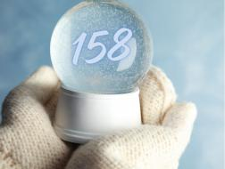
10. 01. 2026
Nadace OKD uzavřela výzvy pro rok 2026. Žadatelé v programu Pro region odeslali celkem 122 žádostí. Jde o projekty neziskových organizací převážně z Moravskoslezského…
Zjistit více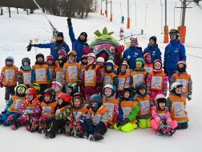
05. 01. 2026
Již od roku 2012 realizuje Statutární město Karviná prostřednictvím programu Pro region projekt s názvem „Karviná lyžuje“. Tento projekt se zaměřuje na podporu zdravého…
Zjistit více23. 12. 2025
Nezapomeňte, že můžete podávat žádosti do dvou vyhlášených výzev! Srdcovka: příjem žádostí do 9. 1. 2026. Konzultovat své záměry můžete do 2.1.2026 •…
Zjistit více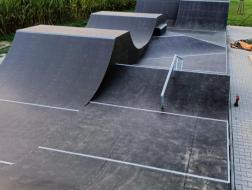
15. 12. 2025
Obec Stonava dlouhodobě dbá na komplexní rozvoj sportovní a volnočasové infrastruktury pro občany všech věkových kategorií. Přestože stávající vybavenost obce, včetně…
Zjistit více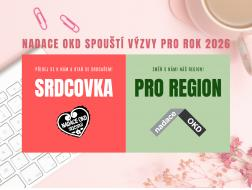
04. 12. 2025
KARVINÁ (4. prosinec 2025) – Nadace OKD spustí 4. prosince 2025 příjem žádostí v programu Pro region a také minigrantový program Srdcovka na rok 2026. Grantový program…
Zjistit více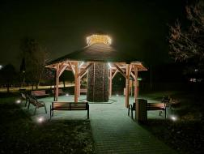
24. 11. 2025
Petrovice u Karviné se mohou těšit na zbrusu nové místo, které kombinuje odpočinek, zdravotní benefity a podporu ekologické dopravy. Projekt "Altánek se solankovým…
Zjistit více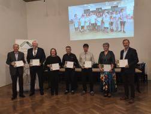
14. 11. 2025
Lidé z neziskových organizací nečekají na potlesk ani slávu – jejich skutečnou odměnou je dopad, který svou prací tvoří. Ale my víme, že nic nepotěší více, než když si…
Zjistit více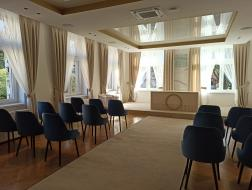
03. 11. 2025
Budova obecního úřadu obce Doubrava byla postavená v roce 1925. Po osamostatnění obce od Orlové v roce 1990 se budova stala sídlem obecního úřadu. V důsledku působení…
Zjistit více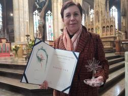
20. 10. 2025
S hlubokou pokorou a vděčností převzala Nadace OKD Cenu Charity Česká republika 2025. Slavnostní předávání se uskutečnilo 17.10.2025 v katedrále sv. Víta, Václava a…
Zjistit více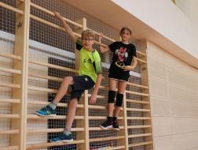
07. 10. 2025
Základní škola Ke Studánce v Orlové má díky novým sportovištím ještě větší radost z pohybu. Za účasti vedení města, Nadace OKD, ředitele, učitelů a žáků ZŠ se v úterý…
Zjistit více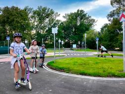
29. 09. 2025
V rámci okresu Karviná je Obec Petrovice u Karviné se svými téměř 5 tis. obyvateli osmou největší obcí a co do své rozlohy je srovnatelná kupříkladu s městem Orlová.…
Zjistit více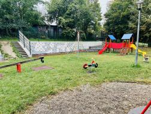
22. 09. 2025
Dětské hřiště ve Sviadnově se nachází vedle Základní školy a je veřejně přístupné. Na hřišti bylo umístěno několik dětských prvků, které zde byly od roku 2013 a byly…
Zjistit více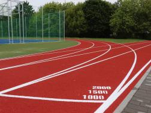
15. 09. 2025
Orlovská mládež i veřejnost má k dispozici nově zrekonstruované sportoviště. Areál u Základní školy U Kapličky v Orlové-Lutyni slavnostně otevřelo vedení města se…
Zjistit více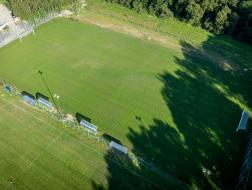
08. 09. 2025
Zbrusu nové tréninkové fotbalové hřiště vzniklo v Havířově-Městě u letního kina. Stálo přes osm milionů korun a sloužit bude sportovním klubům i široké veřejnosti.…
Zjistit více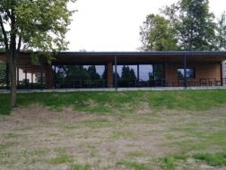
01. 09. 2025
Původní budova z roku 1976, vybudovaná v akci "Z", která sloužila jen jako šatny pro fotbalový klub, byla i přes maximální snahu o udržení provozuschopnosti ve stavu,…
Zjistit více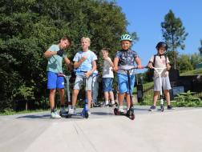
11. 08. 2025
Jako v mraveništi to dnes dopoledne vypadalo v areálu nového skateparku v ulici Ke Studánce v Orlové-Lutyni, který se slavnostně otevřel veřejnosti. Moderního betonového…
Zjistit více31. 07. 2025
Fotbalové hřiště a běžecká dráha v obci Dolní Domaslavice se nachází v blízkosti základní a mateřská školy, tenisových kurtů a dětského hřiště. Areál je tak využíván…
Zjistit více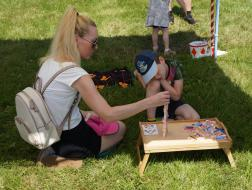
01. 07. 2025
Uteklo to jako voda a jsou tady prázdniny. Děti se vydají na příměstké nebo pobytové tábory, kempy či soustředění, ale i kultura o prázdninách neutichá. Můžete se těšit…
Zjistit více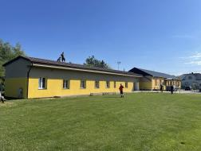
23. 06. 2025
Sport je nedílnou součástí dnešního moderního způsobu života a vedení obce Stonava podporuje jakékoliv sportovní aktivity. Vytvořit sportovcům a funkcionářům…
Zjistit více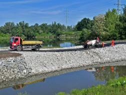
16. 06. 2025
Trvalo to více než deset let, ale stálo to za to. V úterý 3. června v 10 hodin se kolem Vrbického jezera v Bohumíně oficiálně otevře nejdelší in-line a cyklookruh v…
Zjistit více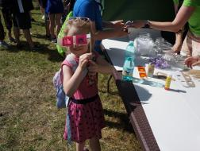
09. 06. 2025
Představujeme vám plány pro Dny Karviné a Hornické slavnosti 2025, jejíž zábavná a kulturní část pro širokou veřejnost se uskuteční ve dnech 13. a 14. června na Hlavní…
Zjistit více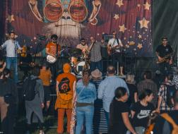
02. 06. 2025
V červnu se vydá spoustu organizací na rekondiční pobyty, soustředění, kempy nebo tábory, ale o kulturní a sportovní zážitky rozhodně nebude nouze. 6.6. si na Lodičkách…
Zjistit více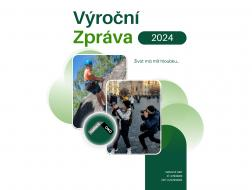
27. 05. 2025
A je na světě, Výroční zpráva za rok 2024. Výroční zpráva obsahuje podrobný přehled aktivit nadace, přináší kompletní seznam podpořených organizací i finanční zprávu.…
Zjistit více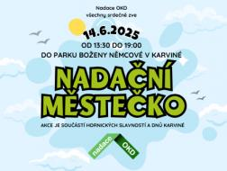
12. 05. 2025
Oslavy Dnů Karviné a Hornické slavnosti 2025, které se uskuteční 13. a 14. června doplní svým programem pro děti v pátek 13. června Městský dům kultury Karviná. Nadační…
Zjistit více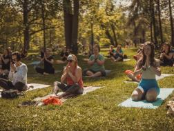
02. 05. 2025
Měsíc květen odstartovalo víkendové Vítání slunce na Lodičkách pod vedením zkušeného lektora Marka Szwedy z Dragon Club Karviná. Na tyto jógové lekce se můžete těšit…
Zjistit více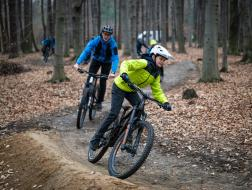
03. 04. 2025
Nadace OKD letos podpořila celkem 139 projektů. Jedná se především o projekty, které se snaží zvelebit prostranství, nakoupit nové pomůcky či vybavení, uspořádat tábory,…
Zjistit více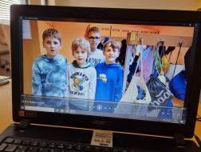
18. 03. 2025
Školní rok 2023/24 byl poslední, kdy se žáci Základní a mateřské školy v Řepišti vzdělávali ve staré budově, od září 2024 se výuka přesunula do školy nové. Stará budova…
Zjistit více
01. 03. 2025
KARVINÁ (1. březen 2025) - Nadace OKD podpoří 139 neziskových projektů v našem regionu celkovou částkou 9 358 000 Kč. Žádostí v programu Pro region bylo přijato 128 a po…
Zjistit více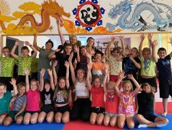
11. 01. 2025
Nadace OKD uzavřela výzvy pro rok 2025. Žadatelé v programu Pro region odeslali celkem 128 žádostí, celková částka, o kterou žadatelé žádají, je více než trojnásobná,…
Zjistit více07. 01. 2025
Do pondělí 6. ledna 2025 mohli aktivní zaměstnanci našich dárců, neboli Srdcaři, odesílat žádosti ve výzvě Srdcovka pro rok 2025. I letos bylo přijato spoustu…
Zjistit více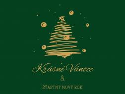
23. 12. 2024
Nezapomeňte, že můžete podávat žádosti do dvou vyhlášených výzev! Srdcovka: příjem žádostí do 6. 1. 2025. Konzultovat své záměry můžete do 3.1.2025 •…
Zjistit více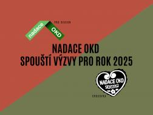
04. 12. 2024
KARVINÁ (4. prosinec 2024) – Nadace OKD spustí 4. prosince 2024 příjem žádostí v programu Pro region a také minigrantový program Srdcovka na rok 2025. Grantový program…
Zjistit více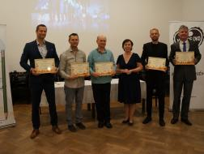
21. 11. 2024
Každý rok se díváme, jak lidi z neziskových organizací tvrdě pracují na svých projektech. Za svou aktivitu nečekají potlesk ani slávu, ale my víme, že nic nepotěší více,…
Zjistit více
11. 11. 2024
STONAVA, 8. listopadu 2024 – 20,1 milionu korun z mimořádného finančního daru, který Nadaci OKD věnovala ze svého zisku společnost OKD, bude využito na podporu 7 veřejně…
Zjistit více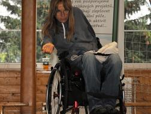
28. 10. 2024
Lidé s tělesným postižením odkázaní na pomoc druhé osoby ve většině případech končí v ústavní zařízeních. Přitom by se rádi zapojili plnohodnotně do společnosti a…
Zjistit více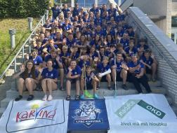
21. 10. 2024
Florbalový klub 1. FBC Karviná se nedávno zúčastnil populárního mládežnického turnaje Rungsted Cup 2024, který se konal v dánském Hørsholmu, nedaleko od Kodaně. Tento…
Zjistit více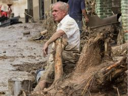
07. 10. 2024
Díky daru těžební společnosti OKD věnovala Nadace OKD 3 miliony korun na odstraňování následků povodní v Moravskoslezském kraji. 2 miliony byly poskytnuty obecně…
Zjistit více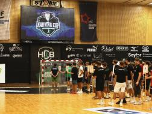
30. 09. 2024
Historie této akce sahá do roku 1994, kdy parta nadšenců uspořádala 1. ročník Karviná Handball CUP, který měl povýšit čistý sport tam, kde jsou jeho kořeny a to je…
Zjistit více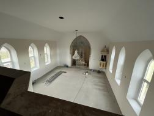
23. 09. 2024
Farní sbor Slezské církve evangelické augsburského vyznání ve Stonavě usiloval o dofinancování oprav kostela, který byl postaven v roce 1938 a do této doby neprošel…
Zjistit více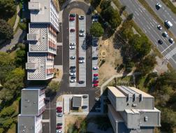
16. 09. 2024
Nová parkovací místa a přeměna veřejného prostranství v Karviné mezi tř. 17. listopadu a ulicí Nedbalovou jsou dva úspěšně dokončené projekty Města Karviná v grantovém…
Zjistit více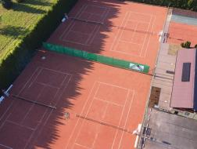
09. 09. 2024
Po několikaletém chátrání a uzavření během pandemie COVID-19 se tenisové kurty ve Stonavě dočkaly kompletní rekonstrukce a již tento týden budou znovu otevřeny pro…
Zjistit více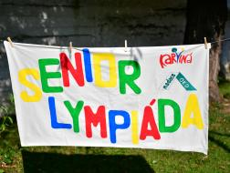
02. 09. 2024
V rámci konání Letních olympijských her v Paříži připravil Sociální odbor magistrátu Statutárního města Karviná projekt s názvem "Cesta na Olymp", který si klade za cíl…
Zjistit více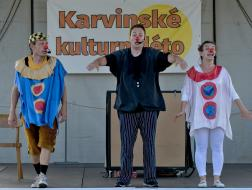
01. 08. 2024
Měsíc prázdnin je za námi, ale snad jste si nemysleli, že by jste se v srpnu nudili. Můžete se těšit na nespočet skvělých kulturních akcí. Červencové neděle jste si…
Zjistit více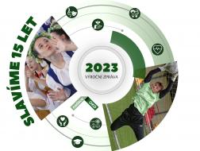
25. 07. 2024
Výroční zpráva za rok 2023 je na světě! Výroční zpráva obsahuje podrobný přehled aktivit nadace, přináší kompletní seznam podpořených organizací i finanční zprávu. Každý…
Zjistit více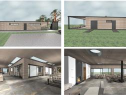
01. 07. 2024
STONAVA, 1. července 2024 – Podobně jako loni poskytne těžební společnost OKD ze svého zisku mimořádný dar Nadaci OKD. Finanční dar ve výši 29 milionů korun bude využit…
Zjistit více
30. 06. 2024
Grantové řízení je zaměřeno na podporu investičních projektů nekomerčního charakteru měst a obcí a jejich příspěvkových organizací s cílem přispět k rozvoji regionu…
Zjistit více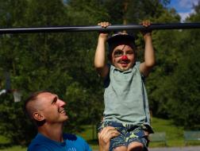
20. 06. 2024
Spolek Family for kids, z.s. pořádal v karvinském parku Boženy Němcové, konkrétně na Lodičkách akci s názvem Odpoledne s tátou . Jednalo se o oslavu svátku ke Dni otců a…
Zjistit více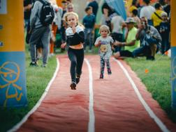
03. 06. 2024
Představujeme vám plány pro DNY Karviné a Hornické slavnosti 2024 , jejíž zábavná a kulturní část pro širokou veřejnost se uskuteční ve dnech 7. a 8. června na Hlavní…
Zjistit více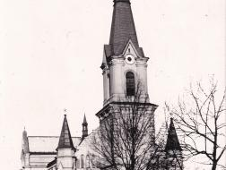
20. 05. 2024
Po třech letech kombinování se v těchto měsících spolku Stará Karviná daří realizovat projekt důstojné připomínky zbouraného kostela sv. Jindřicha ve staré Karviné.…
Zjistit více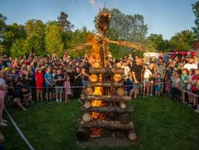
03. 05. 2024
Nadace OKD letos podpořila celkem 127 projektů. Jedná se především o projekty, které se snaží zvelebit prostranství, nákupy pomůcek či vybavení, tábory, pobyty,…
Zjistit více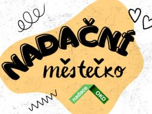
19. 04. 2024
Oslavy Dnů Karviné a Hornické slavnosti 2024, které se uskuteční 7. a 8. června doplní svým programem pro děti v pátek 7. června Městský dům kultury Karviná. Nadační…
Zjistit více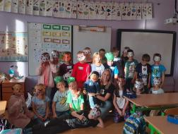
01. 04. 2024
Společnost Green Gas DPB, a.s. je neodmyslitelnou součástí nadace. Zaměstnanci této společnosti jsou pilní jako včeličky a v minigrantové výzvě Srdcovka podali od roku…
Zjistit více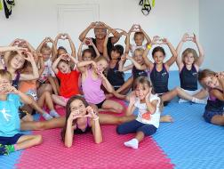
01. 03. 2024
KARVINÁ (1. březen 2024) - Nadace OKD podpoří celkovou částkou 8 miliónů korun 127 neziskových projektů v našem regionu. Žádostí v programu Pro region bylo přijato 126 a…
Zjistit více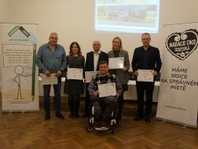
26. 01. 2024
Každý rok se díváme, jak lidi z neziskových organizací tvrdě pracují na svých projektech. Za svou aktivitu nečekají potlesk ani slávu, ale my víme, že nic nepotěší více,…
Zjistit více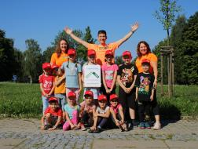
15. 01. 2024
Nadace OKD uzavřela výzvy pro rok 2024. Žadatelé v programu Pro region odeslali celkem 126 žádostí, celková částka, o kterou žadatelé žádají, je téměř trojnásobná, než…
Zjistit více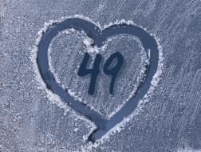
09. 01. 2024
Do pondělí 8. ledna 2024 mohli aktivní zaměstnanci našich dárců, neboli Srdcaři, odesílat žádosti ve výzvě Srdcovka pro rok 2024. I letos bylo přijato spoustu…
Zjistit více02. 01. 2024
Nadace OKD přijímá žádosti na rok 2024 do dvou svých programů s názvem Srdcovka a Pro region . Srdcovka Minigrant Srdcovka 2024 je určený všem zaměstnancům OKD, a.s.,…
Zjistit více22. 12. 2023
Nadace OKD je v období od 27. 12. do 29. 12. 2023 uzavřena. Pokud nás budete chtít navštívit, tak setkání směřujte na úterý 2. 1. 2024, to vám již budeme k dispozici v…
Zjistit více04. 12. 2023
KARVINÁ (4. prosinec 2023) – Nadace OKD spustí 4. prosince 2023 příjem žádostí v programu Pro region a také minigrantový program Srdcovka na rok 2024. Grantový program…
Zjistit více08. 11. 2023
STONAVA, 8. listopadu 2023 – V novém programu Nadace OKD obcím se prostřednictvím grantového řízení rozdělilo mezi 13 investičních projektů nekomerčního charakteru 40…
Zjistit více23. 10. 2023
Městský dům kultury Karviná, příspěvková organizace pořádá kulturní akce od jeho otevření v roce 1964. Občanům města Karviné, ale i těm z blízkého okolí nabízí…
Zjistit více13. 10. 2023
Klub hornického muzea Ostrava se pravidelně zúčastňuje setkávání hornických měst a obcí České republiky, ale také na obdobných akcích v Polsku a na Slovensku. Proto…
Zjistit více03. 10. 2023
Pobočný spolek ČTU - T.K. Kamarádi Opava tvoří přes šest tisícovek tábornic a táborníků sdružených ve 12 oblastech a 156 klubech, osadách a oddílech rozesetých po všech…
Zjistit více26. 09. 2023
Městský fotbalový klub Karviná, z.s. je neziskovou organizací, která od roku 2003 vychovává děti a mládež k fotbalovým dovednostem. Spolek organizuje sportovní činnost…
Zjistit více28. 08. 2023
Představujeme vám plány pro Hornické slavnosti 2023, jejíž zábavná a kulturní část pro širokou veřejnost se uskuteční v sobotu 2. září v Parku Boženy Němcové v…
Zjistit více21. 08. 2023
Bez stanů to nejde! Radek, zaměstnanec našeho dárce Green Gas DPB, a.s. nelenil a díky minigrantu Srdcovka pomohl Skautskému středisko Šenov pořídit materiál na výrobu…
Zjistit více07. 08. 2023
Hornické slavnosti 2023 v Parku B. Němcové v Karviné – Fryštátě doplní v sobotu 2. září program připravovaný Nadací OKD a samozřejmě i jejími partnerskými neziskovými…
Zjistit více03. 07. 2023
STONAVA, 3. července 2023 – Společnost OKD poskytne Nadaci OKD dar ve výši 58 milionů korun. Prostřednictvím grantového řízení bude použit na podporu veřejně prospěšných…
Zjistit více30. 06. 2023
Grantové řízení je zaměřeno na podporu investičních projektů nekomerčního charakteru měst a obcí a jejich příspěvkových organizací s cílem přispět k rozvoji regionu…
Zjistit více28. 06. 2023
A je na světě, Výroční zpráva za rok 2022. Výroční zpráva obsahuje podrobný přehled aktivit nadace, přináší kompletní seznam podpořených organizací i finanční zprávu.…
Zjistit více06. 06. 2023
Taneční škola AKCENT OSTRAVA sklízí úspěchy. S formací disco Mraveniště obsadila skupina mini dětí 3. místo a s formací show Origami 2. místo na Mistrovství České…
Zjistit více12. 05. 2023
Jako každý rok, bylo i v tom letošním podpořeno nespočet letních pobytových a příměstských táborů. Děti se o prázdninách určitě nudit nebudou a každý si najde to své.…
Zjistit více01. 03. 2023
KARVINÁ (1. březen 2023) - Nadace OKD podpoří 137 neziskových projektů v našem regionu. Dotaci poskytne také sirotkům ze Spolku svaté Barbory a nezapomíná taktéž na…
Zjistit více
20. 01. 2023
KARVINÁ (21. leden 2023) – Nadace předala ocenění a také slavila Už za pár dnů, tedy přesně 25. ledna to bude 15. let, kdy akciová společnost OKD zřídila svou nadaci a…
Zjistit více17. 01. 2023
Nadace OKD uzavřela výzvy pro rok 2023. Žadatelé v programu Pro region odeslali celkem 128 žádostí , celková částka, o kterou žadatelé žádají, je více než dvojnásobná,…
Zjistit více10. 01. 2023
Do pondělí 9. ledna 2023 mohli aktivní zaměstnanci našich dárců, neboli Srdcaři, odesílat žádosti ve výzvě Srdcovka pro rok 2023. I letos bylo přijato spoustu…
Zjistit více02. 01. 2023
Nadace OKD přijímá žádostí na rok 2023 do dvou svých programů s názvem Srdcovka a Pro region. Srdcovka Minigrant Srdcovka 2023 je určený všem zaměstnancům OKD, a.s.,…
Zjistit více21. 12. 2022
Nadace OKD je v období od 26. 12. 2022 do 30. 12. 2022 uzavřena. Pokud nás budete chtít navštívit, tak setkání směřujte na pondělí 2. 1. 2023, to vám již budeme k…
Zjistit více04. 12. 2022
KARVINÁ (4. prosince 2022) – Nadace OKD spustí od 4. prosince 2022 příjem žádostí v programu Pro region a také minigrantový program Srdcovka na rok 2023. Grantový…
Zjistit více21. 11. 2022
Někteří z vás vědí, někteří tuší a ti, kteří do dnešního dne neměli ponětí, tak těm dáváme na vědomí, že Nadace OKD má novou ředitelku. Nyní se, prosím obracejte na paní…
Zjistit více14. 11. 2022
Členové Klubu přátel hornického muzea v Ostravě, z.s. reprezentovali na již 26. setkání Ostravsko-karvinský revír. Hornické setkání proběhlo v Kutné Hoře za účasti 75…
Zjistit více07. 11. 2022
Knihovnice z Regionální knihovny Karviná, příspěvkové organizace mají skvělé nápady, mezi ně patří různorodá setkání pro seniory. Projekt v programu Pro region s názvem…
Zjistit více25. 10. 2022
To, že mají děti málo pohybu je známý fakt a tuto problematiku se snaží vyřešit nejeden sportovní klub či oddíl. O vytvoření kladného vztahu k pohybu se začal aktivně…
Zjistit více10. 10. 2022
Mezinárodní den seniorů, je den, kdy si lidé váží přínosů, které senioři pro společnost dělají. Slaví se 1. října již 31.let. Napadl nás, skvělý způsob, jak tento den…
Zjistit více03. 10. 2022
Poslední víkend v záři si užili děti, maminky a přátelé Spolku svaté Barbory v překrásném prostředí Hostýnských vrchů v Rusavě. "Počasí nám přálo a tak jsme mohli…
Zjistit více19. 09. 2022
Hokejový klub Karviná 2021, z.s. rozšířil zázemí pro mladé hokejisty a hokejistky o novou tělocvičnu, ta bude sloužit zejména pro zvyšování jejich fyzické kondice. Díky…
Zjistit více05. 09. 2022
Nadační městečko se blíží. Už příští sobotu, 17.9.2022 se potkáme v karvinském parku Boženy Němcové, kde pro vás bude od 13.00 připraven skvělý program. O zábavu,…
Zjistit více29. 08. 2022
Family for kids sami sebe definují jako rodinný tým, ten je složený z rodičů a jejich dětí. Hlavním cílem tohoto spolku je podpora volnočasového vyžití rodin s dětmi…
Zjistit více19. 08. 2022
Spolek ADAM - autistické děti a MY nadace podporuje již řadu let jak v programu Pro region, tak v minigrantu Srdcovka. Letos tomu nebylo jinak a byl podpořen již…
Zjistit více15. 08. 2022
Dragon Club Karviná, z.s . podporuje nadace již řadu let jak v programu Pro region , tak v minigrantu Srdcovka . Trenéři se soustřeďují zejména na trénování bojového…
Zjistit více28. 07. 2022
Představujeme vám plány pro Hornické slavnosti 2022, jejíž zábavná a kulturní část pro širokou veřejnost se odbude v sobotu 17. září v Parku Boženy Němcové v…
Zjistit více25. 07. 2022
Pobočný spolek SPMP ČR z Karviné uspořádal pro své klienty týden plný zábavy a rehabilitace. Spolek podporujeme již řadu let a to v obou nadačních programech. Velice nás…
Zjistit více18. 07. 2022
Myslivecký spolek Václavovice u Frýdku-Místku, z.s. je prostřednictvím mini grantového programu Srdcovka podporován již od roku 2013. Mají tedy za sebou velký kus práce…
Zjistit více07. 07. 2022
Po akcemi nabitém červnu vám nabízíme přehled červencových akcí, které stojí určitě za návštěvu. Prázdninové čtvrtky a neděle budou patřit všem dětem z Havířova a okolí.…
Zjistit více30. 06. 2022
Hornické slavnosti 2022 v Parku B. Němcové v Karviné – Fryštátě doplní v sobotu 17. září program připravovaný Nadací OKD a samozřejmě i jejími partnerskými neziskovými…
Zjistit více24. 06. 2022
A je na světě, Výroční zpráva za rok 2021. Výroční zpráva obsahuje podrobný přehled aktivit nadace, přináší kompletní seznam podpořených organizací i finanční zprávu.…
Zjistit více20. 06. 2022
Sociální služby města Orlové v uplynulém roce oslavily své desáté narozeniny, ale oslavit toto výročí mohly až letos. O to krásnější a dojemnější pocity si odnesli…
Zjistit více15. 06. 2022
Již tuto sobotu, 18. září 2022 se v areálu Loděnice v parku Boženy Němcové, uskuteční karvinský rockový festival Dolański Gróm , který pořádá již podvanácté Místní…
Zjistit více30. 05. 2022
V červnu nebude o kulturní zážitky nouze. Představujeme vám přehled kulturních a sportovních akcí, na kterých nemůžete chybět, vybere si opravdu každý. Městský dům…
Zjistit více19. 05. 2022
Jak jsme již dříve psali, Nadace OKD se připojila ke spolupráci na zajišťování prvního českého „trvale udržitelného“ festivalu, tedy akce s minimálním dopadem na životní…
Zjistit více12. 05. 2022
Dragon Club Karviná, z.s. se věnuje praktikováním bojových umění a sportovní přípravě dětí, mládeže, dospělých a seniorů již 15 let. V loňském roce absolvovali…
Zjistit více03. 05. 2022
Světový den hygieny rukou každoročně připadá na 5. květen a u této příležitosti se Nemocnice Karviná - Ráj, příspěvková organizace , rozhodla zorganizovat…
Zjistit více29. 04. 2022
Zahájení sezóny na Lodičkách v Karviné vypukne již tento víkend a bude to stát za to. "Začneme otevřením sezóny s kapelami různých žánrů a v neděli nás čeká první ročník…
Zjistit více21. 04. 2022
V pořadí již osmá abilympiáda se konala 12. dubna 2022 u příležitosti 100. výročí založení SŠ, ZŠ a MŠ Komenského v Karviné. Soutěžení v ručních dovednostech je určeno…
Zjistit více31. 03. 2022
Nadace OKD se připojila ke spolupráci na zajišťování prvního českého „trvale udržitelného“ festivalu, tedy akce s minimálním dopadem na životní prostředí. Uskuteční se v…
Zjistit více01. 03. 2022
KARVINÁ (1. březen 2022) - Nadace OKD podpoří 131 neziskových projektů v regionu. Dotaci poskytne také hornickým sirotkům ze Spolku svaté Barbory a nezapomíná taktéž na…
Zjistit více08. 02. 2022
Výsledky výzev zveřejníme na našem webu sice až v úterý 1. března 2022 , ale kdo je připraven, není zaskočen. Proto apelujeme na všechny žadatele, aby si připravili…
Zjistit více18. 01. 2022
Nadace OKD uzavřela výzvy pro rok 2022. Žadatelé v programu Pro region odeslali celkem 122 žádostí , celková částka, o kterou žadatelé žádají, je více než dvojnásobná,…
Zjistit více11. 01. 2022
Do pondělí 10. ledna 2022 mohli aktivní zaměstnanci našich dárců, neboli Srdcaři, odesílat žádosti ve výzvě Srdcovka pro rok 2022. I letos bylo přijato spoustu…
Zjistit více03. 01. 2022
Nadace OKD přijímá žádostí do dvou svých programů s názvem Srdcovka a Pro region na rok 2022. Srdcovka Minigrant Srdcovka 2022 je určený všem zaměstnancům OKD, Green Gas…
Zjistit více20. 12. 2021
Nadace OKD je v období od 24. 12. 2021 do 31. 12. 2021 uzavřena. Pokud nás budete chtít navštívit, tak setkání směřujte na pondělí 3. 1. 2022, to vám již budeme k…
Zjistit více03. 12. 2021
KARVINÁ (3. prosince 2021) – Nadace OKD spustí od 4. prosince 2021 příjem žádostí v programu Pro region a také minigrantový program Srdcovka na rok 2022. Grantový…
Zjistit více26. 11. 2021
Naplnění duchovní potřeby lidí je pro Farní sbor Slezské církve evangelické a. v. v Orlové prioritou, ale epidemiologická situace a opatření proti šíření nemoci Covid-19…
Zjistit více12. 11. 2021
KARVINÁ (11. listopad 2021) - Nadace OKD předala ceny za nejlepší neziskové projekty roku v kategoriích Projekt roku, Inovativní projekt a Srdcař roku 2021. "Nadace…
Zjistit více10. 11. 2021
Tři vypravené vagóny s celkem 264 obyvateli Orlové měli možnost putovat po hornických vlečkách z Havířova do Ostravy a to díky nadačnímu příspěvku v programu Pro region…
Zjistit více26. 10. 2021
Takový název měl projekt zaměřený na třídění odpadů, který proběhl v rámci minigrantu Srdcovka . Cílem projektu je nejen zlepšit znalosti žáků o třídění komunálního…
Zjistit více13. 10. 2021
Mobilní hospic Ondrášek poskytuje každodenní nepřetržitou péči nemocným dospělým i dětem, aby mohli svůj život dožít doma. Zdravotníci poskytují péči zdravotní,…
Zjistit více04. 10. 2021
ADRA, o.p.s. je na karvinsku velice aktivní. Své dlouhodobé dobrovolníky vysílá do sociálních a zdravotnických zařízení a domácností - k seniorům, lidem s postižením,…
Zjistit více26. 08. 2021
Hornické slavnosti 2021 v Parku B. Němcové v Karviné – Fryštátě doplní v sobotu 18. září i program připravovaný Nadací OKD a samozřejmě i jejími partnerskými…
Zjistit více15. 07. 2021
Centrum pro rodinu Sluníčko, z.ú. je poradna pro rodiny s dětmi, která poskytuje podporu a pomoc rodinám tak, aby došlo ke stabilizaci rodiny a vzájemných vztahů jak…
Zjistit více23. 06. 2021
Udržovat tradici společných setkání a zapojit všechny věkové skupiny do spolupráce, o to se snaží v rámci projektu Pro region "Hry s babičkou a dědečkem," Mateřská škola…
Zjistit více14. 06. 2021
A je na světě, Výroční zpráva za rok 2020. Výroční zpráva obsahuje podrobný přehled aktivit nadace, přináší kompletní seznam podpořených organizací i finanční zprávu.…
Zjistit více04. 06. 2021
Celkem 18 mladých rybářů a rybářek se v sobotu 29.5.2021 zúčastnilo rybářských závodů O pohár starosty města Orlová, které pořádal Český rybářský svaz místní organizace…
Zjistit více19. 05. 2021
Rozvod je složitý etický, právní a společenský problém, který se netýká pouze manželů, ale má obrovský vliv na jejich společné děti. Smyslem realizovaného projektu…
Zjistit více06. 05. 2021
Každý rok se díváme, jak lidi z neziskových organizací tvrdě pracují na svých projektech. Za svou aktivitu nečekají potlesk ani slávu, ale my víme, že nic nepotěší více,…
Zjistit více25. 03. 2021
"I když prší, i když sněží, atlet na stadion běží!" Takto zní motto Atletického oddílu TJ JÄKL Karviná, z.s, který je tradičním žadatelem v programu Pro region. Podpora…
Zjistit více01. 03. 2021
KARVINÁ (1. března 2021) - Nadace OKD podpoří 137 neziskových projektů v kraji. Dotaci poskytne také hornickým sirotkům ze Spolku svaté Barbory a nezapomíná taktéž na…
Zjistit více09. 02. 2021
Spolek Podané ruce, z. s. nadace podporuje v rámci programu Pro region již od roku 2010. Organizace vznikla za účelem použití psů k fyzické, psychosomatické, psychické a…
Zjistit více19. 01. 2021
Nadace OKD uzavřela výzvy pro rok 2021. Žadatelé v programu Pro region odeslali celkem 124 žádostí , celková částka, o kterou žadatelé žádají, je více než dvojnásobná,…
Zjistit více12. 01. 2021
Do pátku 8. ledna 2021 mohli aktivní zaměstnanci našich dárců, neboli Srdcaři, odesílat žádosti ve výzvě Srdcovka pro rok 2021. I letos bylo přijato spoustu…
Zjistit více02. 01. 2021
Nadace OKD přijímá žádostí do dvou svých programů s názvem Srdcovka a Pro region na rok 2021. Srdcovka Minigrant Srdcovka 2021 je určený všem zaměstnancům OKD a.s., OKD…
Zjistit více17. 12. 2020
Nadace OKD je v období od 23. 12. 2020 do 1. 1. 2021 uzavřena. Pokud nás budete chtít navštívit, tak setkání směřujte na pondělí 4. 1. 2021, to vám již budeme k…
Zjistit více07. 12. 2020
Karviná (7. prosince 2020) – Nadace OKD spustila příjem žádostí v programu Pro region na rok 2021 . Tento grantový program se snaží směřovat finance do organizací…
Zjistit více04. 12. 2020
KARVINÁ (4. prosince 2020) – Jako každý rok, na den patronky havířů svaté Barbory, který připadá na pátek 4. 12. 2020 , vyhlašujeme minigrant Srdcovka 2021 , určený všem…
Zjistit více26. 11. 2020
Jak zajistit všestranný rozvoj dětí v dnešním technickém světe, který se stále zdokonaluje a vyvíjí? Polytechnickým vyučováním v Mateřské škole K. Dvořáčka v…
Zjistit více10. 11. 2020
KARVINÁ (6. listopadu 2020) – Nadace OKD poskytne individuální finanční pomoc ve výši 175 000 Kč Oblastnímu spolku ČČK Karviná. „Nestačí mi slova, abych vyjádřil naši…
Zjistit více30. 10. 2020
Sociální služby Karviná, příspěvková organizace zajišťuje v rámci okresu Karviná poskytování fakultativních služeb přepravu imobilních osob na vozíku. „Zájem o přepravu…
Zjistit více30. 09. 2020
Regionální knihovna Karviná, příspěvková organizace pořádá další ročník úspěšného a oblíbeného projektu s názvem 7. ročník Setkání seniorů - arteterapeutické programy…
Zjistit více15. 09. 2020
Handicap sport club Havířov sdružuje děti, mládež i dospělé s těžkým tělesným handicapem. Členy klubu jsou také jejich rodiče, osobní asistenti, spoluhráči, příznivci a…
Zjistit více04. 09. 2020
Spolek 1. SFK Havířov , se svým projektem Florbal na sídlišti mezi domy , byl podpořen v programu Srdcovka 2020 . Zakoupením plastového demontovatelného povrchu pro…
Zjistit více21. 08. 2020
V roce 2012 nadace podpořila Obnovu mladějovské úzkokolejky v programu Pro budoucnost. Zachováním dráhy budoucím generacím v celé její délce vyžadovalo obnovit provoz na…
Zjistit více30. 07. 2020
MSK Orlová oddíl Baseballu , který jsme podpořili v programu Srdcovka ve spolupráci s Městem Orlová, uspořádal ve čtvrtek 23. července sportovně zábavnou akci určenou…
Zjistit více15. 07. 2020
Prázdniny jsou v plném proudu, děti si je užívají na táborech, soustředěních, ale také na příměstských táborech. Odpočinout si také mohli členové organizace SPMP ČR…
Zjistit více25. 06. 2020
Pro Srdcaře Václava Štefka je letošní Srdcovka premiérou. Je zaměstnancem našeho dárce, společností OKD, a.s. a zároveň již deset let aktivně působí ve Ski klubu…
Zjistit více18. 06. 2020
A je na světě, Výroční zpráva pro rok 2019. Výroční zpráva obsahuje podrobný přehled aktivit nadace, přináší kompletní seznam podpořených organizací i finanční zprávu.…
Zjistit více18. 05. 2020
Karvinská knihovna už dávno není místo, kde si můžete pouze vypůjčit knihy. Ale místo, kde si každý najde svůj kout, může relaxovat u oblíbené knihy či časopisu nebo…
Zjistit více24. 04. 2020
Na základě mimořádného opatření Úřadu vlády České republiky obnovuje Nadace OKD od pondělí 27. dubna 2020 kontakt s veřejností v plném rozsahu. Doporučujeme však i…
Zjistit více16. 03. 2020
V souvislosti s aktuální situací výskytu koronaviru na území České republiky, přijala Nadace OKD následující preventivní opatření: 1. Maximální ochrana zdraví našich…
Zjistit více
02. 03. 2020
KARVINÁ (2. března 2020) - Nadace OKD podpoří 158 neziskových projektů v kraji. Dotaci poskytne také hornickým sirotkům ze Spolku svaté Barbory a nezapomínáme taktéž na…
Zjistit více10. 02. 2020
Základní myšlenkou podpory hornických tradic je udržování hornického ducha u výročních příležitostí, předávání historicko-kulturního dědictví regionu a zajištění volného…
Zjistit více23. 01. 2020
Nadace OKD uzavřela výzvy pro rok 2020. Celkem žadatelé v programu Pro region odeslali 137 žádostí, což je přesně o 9 projektů více než v loňském roce. Jde o projekty…
Zjistit více02. 01. 2020
Nadace OKD přijímá žádostí do dvou svých programů s názvem Srdcovka a Pro region na rok 2020. Srdcovka Minigrant Srdcovka 2020 je určený všem zaměstnancům OKD a.s., OKD…
Zjistit více20. 12. 2019
Nadace OKD v období od 23. 12. 2019 do 1. 1. 2020 je zavřena a nikoho zde nepotkáte. Pokud nás budete chtít navštívit, tak setkání směřujte na 2. 1. 2020, to se nadace…
Zjistit více06. 12. 2019
Karviná (6. prosince 2019) – Nadace OKD spustila příjem žádostí v programu Pro region na rok 2020 . Tento grantový program se snaží směřovat finance do organizací…
Zjistit více04. 12. 2019
KARVINÁ (4. prosince 2019) – Jako každý rok, u příležitosti oslav patronky havířů svaté Barbory, který připadá na středu 4. 12. 2019 , vyhlašujeme minigrant Srdcovka…
Zjistit více15. 11. 2019
KARVINÁ (15. listopad 2019) - Nadace OKD předala ceny za nejlepší projekt roku v kategoriích Projekt roku, Inovativní projekt a Srdcař roku 2019. "Nadace předává ceny…
Zjistit více08. 11. 2019
Lezení není jenom o síle. Lezení je o balancu, o poznání svého těla a orientaci v prostoru. Je o kreativnosti a naučení se poznávat to, co daná cesta vyžaduje. Lezení je…
Zjistit více23. 10. 2019
Spoutaní a se zavázanýma očima byli soutěžící převezeni až za hranice České republiky a to konkrétně do polského Těšína. Takto začal již 11. ročník soutěže "Útěk v…
Zjistit více16. 10. 2019
Jak přiblížit dospívající mládeži krásu řemeslných dovedností a obnovit tak zašlou slávu řemesel všeho druhu? Na tuto otázku se snaží odpovědět již sedmý ročník projektu…
Zjistit více02. 10. 2019
V neděli 29.9.2019 se v areálu Loděnice v Karviné konal 2. Charitativní běh pro Mateřskou školu Klíček s názvem Karviná RUN 2019 . MŠ se zaměřuje na děti se speciálními…
Zjistit více25. 09. 2019
V měsíci březen mohla veřejnost hlasovat v soutěži "Hlas pro projekt 2019." Hlasovat mohla pro neziskové organizace, které neuspěly v grantovém řízení, ale nás zaujaly…
Zjistit více17. 09. 2019
V rámci Hornických slavností 2019 jsme v sobotu 14.9.2019 uspořádali, spolu s neziskovými organizacemi, Pohádkové nadační městečko sestavené z deseti organizací, které…
Zjistit více08. 08. 2019
V sobotu 14. 9. 2019 od 14:00 hodin park Boženy Němcové v Karviné opět ožije. V rámci Hornických slavností 2019 pro vás opět postavíme Nadační městečko, nebude to ale…
Zjistit více30. 07. 2019
Nadace OKD nepodporuje pouze klasické pobytové tábory, ale také příměstské. Co jsou to vlastně příměstské tábory? Je to týdenní docházková akce pro děti a mládež…
Zjistit více27. 06. 2019
Stárnutí je přirozený životní proces a s přibývajícím věkem tak dochází nejen k úbytku fyzických a psychických sil, ale i zájmu sám vyhledávat aktivity, které by…
Zjistit více14. 06. 2019
Výroba slizu není velká věda, ačkoli než jsme přišli na ty pravé ingredience, pořádně jsme se zapotili. Mnozí z vás se nás ptali, z čeho jsme slizy vyráběli. Proto jsme…
Zjistit více05. 06. 2019
V neděli 2.6.2019 měl náš tým Nadace OKD možnost zúčastnit se Pirástkého dne pro celou rodinu v areálu Lodiček v Karviné. Celé odpoledne se neslo v pirátském duchu,…
Zjistit více28. 05. 2019
Nadace není jen o výzvách a administraci, ale i o osobním setkání s lidmi z neziskových organizací. Jde nám především o přímý kontakt a budování přátelských vztahů.…
Zjistit více21. 05. 2019
Pátým rokem pořádá Benjamín Orlová "Dny pro rodinu". Cílem projektu je uspořádání happeningových akcí k podpoře rodiny a to seminářemi na dané téma, worshopy pro rodiče…
Zjistit více15. 05. 2019
Nadace OKD podpořila spoustu zajímavých projektů a my vám nabízíme možnost se jich zúčastnit. Máte se opravdu na co těšit! Spolek Benjamín Orlová vás zve 18. - 19.…
Zjistit více06. 05. 2019
TJ Sokol Karviná + Dětský Domov Srdce + Srdcovka = Spojení ♥ 3.5.2019 pořádala Tělocvičná Jednota Sokol Karviná "Sokolskou olympiádu" pro děti z DD Srdce ve věku od 6 do…
Zjistit více03. 04. 2019
Dne 2.4.2019 pořádala MŠ, ZŠ a SŠ Komenského v Karviné 6. ročník ABILYMPIÁDY, což je soutěžení v ručních dovednostech pro zdravotně postižené děti a mládež od 12 do 26…
Zjistit více27. 03. 2019
Vítězkami nadační soutěže „Hlas pro projekt“ jsou mažoretky a tanečnice. V uplynulém týdnu jste mohli hlasovat v dotazníku a vybrat projekt, který bude podpořen a získá…
Zjistit více13. 03. 2019
Nadace OKD spouští soutěž Hlas pro projekt 2019 , ve které VY svými hlasy vyberete projekt, který MY podpoříme!! Pravidla soutěže: 1. Klikni na přiložený odkaz ZDE 2.…
Zjistit více01. 03. 2019
KARVINÁ (1. března 2019) - Nadace OKD podpoří 144 neziskových projektů v kraji. Dotaci poskytne také hornickým sirotkům ze Spolku svaté Barbory nad rámec veřejné sbírky…
Zjistit více19. 02. 2019
Již brzy! a to 1.3.2019 zveřejníme, které projekty podpoříme v letošním roce. Srdcaři se v letošní výzvě ozvali tradiční, ale i zcela noví. Jelikož se srdcovka točí…
Zjistit více01. 02. 2019
KARVINÁ (1. února 2019) – Finanční dary určené pro pozůstalé členy rodin horníků z důlního neštěstí na Dole ČSM-Sever ve Stonavě 20. prosince 2018 posílali lidé a firmy…
Zjistit více08. 01. 2019
KARVINÁ (8. ledna 2019) – Aktuální výtěžek veřejné sbírky, kterou Nadace OKD zřídila na základě četných dotazů a spontánních reakcí veřejnosti za účelem humanitární…
Zjistit více28. 12. 2018
Výtěžek činí k 2. 1. 2019: 1 542 tis. Kč Děkujeme všem laskavým dárcům, kterým není nešťastný osud rodin horníků lhostejný. Výtěžek k 28. 12. 2018 činil lehce přes 1 400…
Zjistit více21. 12. 2018
Nadace OKD v období od 24. 12. 2019 do 1. 1. 2019 je zavřená a nikoho zde nepotkáte. Pokud nás budete chtít navštívit, tak setkání směřujte na 2. 1. 2019, to se Nadace…
Zjistit více
21. 12. 2018
Vážení a milí, na základě četných dotazů a spontánních reakcí veřejnosti, Nadace OKD ve spolupráci s těžařskou firmou OKD a.s. zřídily u České spořitelny speciální účet…
Zjistit více06. 12. 2018
Karviná 6. 12. 2018 – Nadace OKD spustila příjem žádostí v programu Pro region na rok 2019. Tento grantový program se snaží směřovat finance do organizací zaměřených na…
Zjistit více04. 12. 2018
Minigrant SRDCOVKA 2019 KARVINÁ (4. prosince 2018) - Nadace OKD vyhlásí minigrant Srdcovka 2019 v úterý 4. 12. 2018 na svátek svaté Barbory. Grant je určen pro…
Zjistit více23. 11. 2018
KARVINÁ (23. listopad 2018) – Nadace OKD ocenila podpořené neziskové organizace. Ceny za nejlepší Projekt roku, Srdcaře a Inovativní projekt nadační tým předal v…
Zjistit více26. 10. 2018
Nadace OKD hledá vhodného kandidáta na pozici Marketingový koordinátor Nadace OKD. Zajišťuje odpovídající propagaci Nadace OKD na podporovaných projektech, administruje…
Zjistit více17. 10. 2018
Výzva v minigrantu Srdcovka 2019 bude spuštěna jako vždy na svátek svaté Barbory 4.12.2018. Máme pro vás však NOVINKY. Rozhodli jsme se zjednodušit systém při podávání…
Zjistit více03. 10. 2018
V letošním roce máme tu čest opět podpořit Mobilní hospic Ondrášek. Náš příspěvek se vztahuje k celoroční péči o těžce nemocné děti i dospělé v rámci hospicové péče. O…
Zjistit více25. 09. 2018
Tento projekt, který se letos přesunul z hlavního města k nám do Moravskoslezského kraje, v sobě nese důležité poslání a obrovskou myšlenku pomoci pro všechny mladé lidi…
Zjistit více19. 09. 2018
V letošním roce se nám podařilo podpořit mnoho potřebných projektů. Ukazujeme vám ty nejúspěšnější a nejoblíbenější akce pro veřejnost, děti i seniory, ale je potřeba…
Zjistit více07. 09. 2018
V sobotu 1. 9. 2018 jsme v rámci Hornických slavností 2018 uspořádali Nadační městečko sestavené z celkem 20 neziskových organizací, které nám pomohly zajistit program…
Zjistit více22. 08. 2018
V letošním roce jsme podpořili pěvecký sbor Permoník projektem s názvem "Příprava a realizace výchovných koncertů pro žáky ZŠ okresu Karviná". Mnoho lidí si pod…
Zjistit více09. 08. 2018
V rámci projektu na podporu kultury v Karviné máme možnost podporovat partu mladých lidí, kteří společně tvoří kulturní program pro všechny v Karviné na originálním…
Zjistit více31. 07. 2018
Karviná v létě žije kulturou. Každou prázdninovou neděli si na náměstí T. G. Masaryka v Karviné-Fryštátě můžete poslechnout množství pohodové hudby. Mimo koncerty jsou…
Zjistit více10. 07. 2018
V sobotu 1. 9. 2018 ve 14:00 hodin park Boženy Němcové v Karviné opět ožije hudbou a zábavou pro každého. V rámci Hornických slavností 2018 pro vás opět postavíme…
Zjistit více27. 06. 2018
Za kulturním domem Radost v Havířově se každou prázdninovou neděli můžete těšit na pohádková představení a promenádní koncerty. Stejně jako v předchozích letech jsme…
Zjistit více07. 06. 2018
Ve čtvrtek 14. 6. 2018 budeme na akci Polévka je grunt, kterou pořádá Armáda spásy Havířov. První ročník této akce pro širokou veřejnost proběhne v zahradě ředitelství…
Zjistit více31. 05. 2018
Ve čtvrtek 24. 5. 2018 jsme se potkali v Golf resortu Lipiny s lidmi z neziskových organizací, kteří nám pomohli při organizaci Nadačního městečka 2017. Cílem bylo…
Zjistit více24. 05. 2018
K nadaci neodmyslitelně patří Srdcovka a k tomuto grantovému programu patří Srdcači, neboli patroni daných projektů. Jsou to hasiči, fotbaloví trenéři, nadšení…
Zjistit více16. 05. 2018
Když měl pan Karel Bajtek 10 let pravděpodobně si ani nepředstavoval, že za několik desítek let bude slavit s námi naše 10. narozeniny. Jako vysloužilý horník působil…
Zjistit více09. 05. 2018
Chcete nám pomoci a být s námi na akcích, kterých se účastníme? Chcete dělat dobrou věc a zároveň se u toho bavit? Jste rádi v kontaktu s lidmi a zbožňujete děti? Máme…
Zjistit více03. 05. 2018
Sídliště žije, byl jeden z programů Nadace OKD a hlavním cílem bylo zlepšit mezilidské vztahy v dané lokalitě díky společné práci na konkrétním projektu. A právě o…
Zjistit více18. 04. 2018
10 let Nadace OKD jsme oslavili v lednu a byl s námi i ředitel spolku Heřmánek pan Pavel Sporysh. Heřmánek je organizace, která funguje již bezmála 20 let a s námi je od…
Zjistit více12. 04. 2018
Celý letošní rok je pro nás v nadaci ve znamení oslav 10. výročí naší existence. V lednu jsme měli možnost oslavit naše kulatiny s našimi partnery, dárci, ale především…
Zjistit více28. 03. 2018
Vítězkami nadační soutěže „Lajkni projekt“ jsou fotbalistky a tanečnice. V uplynulém týdnu jste mohli hlasovat na facebookovém profilu Nadace OKD a vybrat projekt, který…
Zjistit více19. 03. 2018
Nadace OKD spouští soutěž Lajkni projekt 2018, ve které VY svými hlasy vyberete projekt, který MY podpoříme!!! Hlasovat můžete na facebookovém profilu Nadace OKD.…
Zjistit více13. 03. 2018
Poradna pro rodiny Sluníčko připravila pro děti, které prošly rozvodem či rozchodem rodičů nový kroužek. Smyslem setkání je pomoci dětem s pochopením rozchodové situace…
Zjistit více27. 02. 2018
KARVINÁ (2. 3. 2018) – Nadace OKD vyhlásila výsledky letošních výzev. V programu Pro region podpoří 83 projektů a na minigrant Srdcovka letos dosáhne celkem 54 srdcařů…
Zjistit více20. 02. 2018
Na oslavě 10. výročí Nadace OKD, bylo mnoho zajímavých lidí. Mezi čestné hosty ten den patřila i paní Helena Fejkusová, ředitelka spolku Podané ruce z Frýdků-Místku. I…
Zjistit více15. 02. 2018
V rámci oslav 10. výročí Nadace OKD, program doplnili zástupci z neziskových organizací a přišli nám vyprávět svůj příběh o tom, jak jim na jejich cestě pomohla právě…
Zjistit více06. 02. 2018
Minulý měsíc jsme vstoupili do nového desetiletí. Jsme jako nadace zkušenější a stali jsme se pro mnoho organizací významným finančním partnerem nejen v kraji.…
Zjistit více25. 01. 2018
KARVINÁ (25. 1. 2018) – Nadace OKD dnes oslavila 10 let svého působení. Za dobu svého fungování podpořila celkem 2 305 projektů částkou přesahujících 312 milionů korun.…
Zjistit více22. 01. 2018
KARVINÁ (22. 1. 2018) – Nadace OKD uzavřela všechny výzvy pro rok 2018. V programu Pro region přijala 148 žádostí a minigrantu Srdcovka 70 žádostí o finanční příspěvek.…
Zjistit více10. 01. 2018
V letošním roce slaví Sluníčko své významné narozeniny. Posláním centra je podpora rodiny, její stabilita, zdravé rodinné a mezigenerační vztahy, které jsou základem…
Zjistit více18. 12. 2017
Přejeme všem pohodové prožití vánočních svátků a vše dobré do nového roku 2018. POZOR: v období od 27. 12. 2017 do 29. 12. 2017 bude kancelář Nadace OKD zavřená . Krásné…
Zjistit více12. 12. 2017
Jako každý rok jsme i letos spustili výzvy v obou našich programech. Připravili jsme pro vás stručný přehled obou programů: Srdcovka Kdo může žádat v Srdcovce 2018?…
Zjistit více
07. 12. 2017
Nová grantová výzva Nadace OKD na rok 2018 je spuštěna. Program Pro region se jako každý rok bude zaměřovat na děti, seniory i hendikepované osoby. Podpora bude mířit k…
Zjistit více01. 12. 2017
Jako každý rok u příležitosti oslav patronky havířů svaté Barbory, vyhlašujeme minigrant Srdcovka 2018, určený všem zaměstnancům OKD a.s., OKD HBZS a.s. a Green Gas DPB…
Zjistit více21. 11. 2017
Blíží se adventní čas a spolek Madleine pořádá tradičně koncerty na podporu dětí z dětských domovů. Tyto adventní akce jsou speciální tím, že zde vystoupí slavné a…
Zjistit více13. 11. 2017
N eobyčejně O byčejná K uchařka D obrot 2 Druhé číslo naší kuchařky, kterou jsme se rozhodli vydávat v loňském roce je na světě. Jako každý rok pořádáme akci Den s…
Zjistit více09. 11. 2017
KARVINÁ (9. listopad 2017) – Projekt roku, Srdcaře a Osobnost neziskové sféry ocenila Nadace OKD ve středu 8. 11. 2017 v obřadní síni Městského kulturního domu v…
Zjistit více03. 11. 2017
Začátek listopadu sebou už tradičně přináší osvětovou kampaň nazvanou „Týden rané péče“ , který se koná od 6. do 12. listopadu . Tato kampaň probíhá celorepublikově a…
Zjistit více31. 10. 2017
Jeden z největších běžeckých závodů na Moravě je opět připraven ke startu. Závod je určený pro širokou veřejnost a letos se běží již 32. ročník v následujících…
Zjistit více26. 10. 2017
Nadace podporuje velké množství neziskových organizací a různých spolků. Jednou z nich je i organizace ONKO - Naděje , která pomáhá lidem se zákeřným onkologickým…
Zjistit více20. 10. 2017
Stejně jako v loňském roce jeli seniorky z Karviné na týdenní pobyt do podhůří Beskyd. Užily si krásné přírody, ale hlavně si zavzpomínaly na to, jaké to bylo, když měly…
Zjistit více11. 10. 2017
Přečetli jste si všechny naše pokyny a stále nevíte jak na vyúčtování, nebo na novou žádost? Nevíte si rady s dokumenty k projektu, nebo prostě jen chcete prodiskutovat…
Zjistit více04. 10. 2017
I letos pokračujeme podporou výjimečného projektu v Paskovském zámku. Respektive se snaží o jeho proměnu ze zdevastovaného objektu na kulturně společenské a vzdělávací…
Zjistit více27. 09. 2017
V letošním roce jsme podpořili mnoho skvělých projektů, některé jsme již znali a některé jsou zcela nové. Pro nás se k novým projektům jednoznačně řadí i podpora žáků…
Zjistit více12. 09. 2017
Karviná (13. září 2017) – Nadace OKD a Česká spořitelna ve spolupráci se spolkem Edukana spustila pokračování souboru interaktivního vzdělávání pro moravskoslezské…
Zjistit více04. 09. 2017
V letošním roce jsme podpořili projekt s názvem „Jsme tady v Karviné pro horníky a dlužníky“, který je realizován Občanskou poradnou Slezské diakonie u nás v Karviné.…
Zjistit více23. 08. 2017
V sobotu 2. 9. 2017 bude park Boženy Němcové v Karviné plný zábavy, hudby a lidí. Po dvou letech se budou opět konat Hornické slavnosti. A my jsme se rozhodli, že pro…
Zjistit více16. 08. 2017
Letošní již 9. ročník ROCKTHERAPY přinese pomoc dvěma mužům a jedné ženě, kteří prodělali cévní mozkovou příhodu. ROCKTHERAPY aneb léčba rockem je festival pořádaný v…
Zjistit více09. 08. 2017
Naděje pro všechny je sdružením zdravotně postižených dětí, mládeže, dospělých a občanů s dlouhodobým zájmem o pomoc při jejich integraci. Jejich cíle jsou se smysluplně…
Zjistit více26. 07. 2017
Letní dětské ozdravné pobyty mají ve Stonavě dlouholetou tradici. Děti si je oblíbily z několika důvodů. Zejména proto, že se obec snaží pokaždé změnit destinaci pobytu,…
Zjistit více21. 07. 2017
Šli jste někdy se školou na koncert a po jeho skončení jste věděli, že byste chtěli být součástí toho kolosu? Komu se to někdy stalo, určitě ten pocit zná… Být členem…
Zjistit více12. 07. 2017
Dva srdcaři, dva projekty a výborná parta lidí. To vše se ukrývá pod Sborem dobrovolných hasičů Frýdek. V letošním roce jsme ve Frýdku podpořili dva srdcovkářské…
Zjistit více12. 07. 2017
Spolek Voltiž duha sdružuje zdravé i hendikepované děti a mládež ve věku od 4 let za účelem rozvoje jezdeckého sportu se zaměřením na voltiž a paravoltiž. Díky projektu…
Zjistit více28. 06. 2017
Spolek Naše Montessa vytvořil projekt s názvem "Montessori s úsměvem ve škole i po škole". Hlavní myšlenkou projektu je založení nové základní školy s prvky…
Zjistit více28. 06. 2017
World Music Contest 2017, Koncert v kulturní památce Důl Barbora, Novoroční koncerty a mnoho jiných vystoupení, to čeká v letošním roce na členy symfonického dechového…
Zjistit více19. 06. 2017
Máme tady opět po roce jeden z největších multižánrových festivalů v ČR. Koná se ve Frýdku-Místku a ke všemu je vstup na něj zcela zdarma. Festival, který začíná už tuto…
Zjistit více13. 06. 2017
Letos proběhne pod záštitou Horolezeckého oddílu Tatran Havířov a jejich srdcaře pana Petra Bochníčka již devátý ročník netradiční adrenalinové soutěže nazvané " Útěk v…
Zjistit více07. 06. 2017
V neděli 11. 6. 2017 od 9:30 hodin proběhne v areálu požární zbrojnice v Karviné – Hranicích již XVI. ročník soutěže „ O putovní pohár města Karviná“. Soutěžit budou…
Zjistit více02. 06. 2017
Z programu Srdcovka jsme letos opět podpořili Sdružení rodičů při Základní škole v Petřvaldu . Patronem projektu je pan Daniel Bureš a společně s dalšími rodiči pořádají…
Zjistit více24. 05. 2017
Srdcař pan Jurásek připravil za pomocí Srdcovky již 2. ročník úspěšného semináře v Karlově pod Pradědem, pořádaného pod patronací SKIF oddílem Karate Silesia Opava.…
Zjistit více17. 05. 2017
Jako v loňském roce i letos pořádá Benjamin Orlová z.s. Dny pro rodinu v Orlové. Letos na děti a jejich rodiče čeká bohatý program od pátku 2. 6. do neděle 4. 6. 2017. V…
Zjistit více11. 05. 2017
Domov pro seniory Havířov pro své obyvatelé připravuje mnoho aktivit. My máme letos to potěšení být díky projektu „Hipoterapie a kultura pro seniory“ s nimi a pomáhat…
Zjistit více04. 05. 2017
Připravili jsme si pro vás novou akci s názvem Po stopách Nadace OKD . Cílem je vyfotit fotografii na které bude logo Nadace OKD společně s minimálně jedním člověkem,…
Zjistit více26. 04. 2017
Blíží se měsíc květen a s ním snad už i teplejší počasí. Je to tedy nejlepší čas na to vyrazit ven a užívat si přírody. Iniciativa dokořán toto počasí vítá a připravila…
Zjistit více21. 04. 2017
V Karviné mají senioři mnoho možností a jednou z nich je i cvičení Pilates, které běží už několik let. Skupina přibližně patnácti seniorek dochází pravidelně jednou…
Zjistit více13. 04. 2017
Karviná (13. dubna 2017) – Nadace OKD a Česká spořitelna ve spolupráci se spolkem Edukana chystá další soubor školení pro moravskoslezské neziskové organizace. Cílem…
Zjistit více12. 04. 2017
Svátky jara jsou opět tady a my v nadaci Vám chceme popřát, abyste si je užili. My si je v Nadaci užíváme už tento týden, dostali jsme od spolku ADAM velikonoční…
Zjistit více05. 04. 2017
Děti s autismem jsou stejné, jako jiné děti. Jen potřebují více pochopení od druhých. To byla hlavní myšlenka, kterou se snažily veřejnosti sdělit spolky či organizace,…
Zjistit více31. 03. 2017
Známe vítěze nové nadační soutěže, které se zúčastnilo 8 vybraných projektů. V kategorii Srdcovka se prvenství ujal Český kynologický svaz ZKO Havířov - Horní Suchá -…
Zjistit více29. 03. 2017
Sportujeme se sportovci s handicapem! Tak zní heslo 17. havířovského turnaje v integrované boccie. Rodiny, sportovní kluby či pracovní kolektivy čeká soutěž, ve které si…
Zjistit více22. 03. 2017
Černé těžké uniformy se zelenými a zlatými doplňky, tradiční lucernička, která svítí na cestu všem horníkům a velký prapor. Pokud někoho takového uvidíte je jasné, že je…
Zjistit více09. 03. 2017
Nová soutěž Nadace OKD, která dává vybraným projektům druhou šanci! Hlasovat můžete na facebookovém profilu Nadace OKD . Dej Lajk „to se mi líbí“ stránce Nadace OKD a…
Zjistit více06. 03. 2017
Projektů má Nadace OKD několik, jeden z nich je i Neziskový Inkubátor II , který vypukne již letos s podporou České spořitelny. Cílem projektu je zrealizovat vzdělávací…
Zjistit více02. 03. 2017
KARVINÁ (2. 3. 2017) – Nadace OKD zná nové příjemce nadačních příspěvků pro rok 2017. V programu Pro region podpoří 83 projektů a minigrantu Srdcovka 55 projektů. „V…
Zjistit více22. 02. 2017
V loňském roce jsme podpořili mnoho spolků a jedním z nich je i PORTAVITA. Tato neziskovka se zaměřuje především na komunitní práci v lokalitách, kde žijí osoby v…
Zjistit více15. 02. 2017
Mnoho lidí v dnešní době neví, že v České republice existují takzvané domy na půli cesty a zařízení pro děti vyžadující okamžitou pomoc. Chtěli bychom vám přiblížit, co…
Zjistit více09. 02. 2017
V lokalitě Karviná - Nové Město provozují lidé z Centra pro rodinu Sluníčko celoročně volnočasový klub pro neorganizované děti s názvem „Bublina“. Jedná se o klub „na…
Zjistit více31. 01. 2017
Obec Doubrava loni započala projekt s názvem „Sportujeme v každém věku“. Hlavní program tohoto projektu však poběží až v letošním roce a začíná velmi úspěšnými výjezdy…
Zjistit více26. 01. 2017
Monika Němcová Předsedkyně spolku Svatá Barbora, který se stará o děti, které přišly při důlním neštěstí o jednoho z rodičů. Co přesně máte ve spolku na starosti? Jsem…
Zjistit více18. 01. 2017
V loňském roce jsme vypsali výzvy v programech Pro region, Pro Evropu a Srdcovka . Počínaje dnešní půlnocí se brány pro příjem žádostí pro rok 2017 zavřely a my jsme tak…
Zjistit více
11. 01. 2017
POZOR poslední termín pro podání žádostí v grantových programech "Pro region" a "Pro Evropu" 2017 je již příští středu 18. 1. 2017! Maximální výše příspěvku u jednoho…
Zjistit více
02. 01. 2017
POZOR poslední termín pro podání žádostí o minigrant Srdcovka 2017 je již příští pondělí 9. 1. 2017! Srdcovka patří mezi oblíbené grantové programy Nadace OKD. Ročně je…
Zjistit více27. 12. 2016
Podívejte se na to jaký byl náš nadační rok 2016 Zpět
Zjistit více20. 12. 2016
Vánoční provoz Nadace OKD út 27. 12. - pá 30. 12. 2016 8:00 - 14:00 hod. Zpět
Zjistit více12. 12. 2016
Chcete žádat o grant v programu Pro region a Pro Evropu a nevíte jak na systém GRANTYS? Připravili jsme pro Vás praktický seminář se zaměřením přímo na práci s GRANTYSem…
Zjistit více07. 12. 2016
Nadace OKD vyhlašuje grantové výzvy na rok 2017. Prostřednictvím grantových programů Pro region a Pro Evropu podpoří neziskové organizace, školy, spolky a obce.…
Zjistit více04. 12. 2016
Nadace OKD, jako každý rok u příležitosti oslav patronky havířů svaté Barbory, vyhlašuje minigrant Srdcovka 2017 , určený zaměstnancům OKD a.s., OKD HBZS a.s. a Green…
Zjistit více29. 11. 2016
V OPAČNÉM PŘÍPADĚ NEMOHOU ŽÁDAT O NADAČNÍ PŘÍSPĚVEK. S účinností od 1. 1. 2014 došlo ke zrušení zákona o sdružování občanů (z.č. 83/1990 Sb.) a k přesunu právní úpravy…
Zjistit více23. 11. 2016
KARVINÁ (22. listopad 2016) - Nadace OKD předala ceny za nejlepší projekt roku v programu Pro region, Srdcaře a Osobnost neziskové sféry za uplynulý nadační rok. „Tento…
Zjistit více15. 11. 2016
Už 29. 11. 2016 začíná cyklus adventních koncertů, které pořádá Spolek Madlein. Série šesti předvánočních koncertů konajících se v našem regionu je výjimečná právě tím,…
Zjistit více08. 11. 2016
N eobyčejně O byčejná K uchařka D obrot To je název nové kuchařky, kterou jsme se rozhodli v Nadaci OKD vydat po letošním Dni s nadací, kde proběhla soutěž o nejlepší…
Zjistit více02. 11. 2016
5. 11. 2016 v 10:30 hodin odstartuje již 31. ročník Hornické desítky, což jsou závody v běhu. Jako vždy se o perfektní zahájení postarají děti, které poběží závody dle…
Zjistit více27. 10. 2016
Městský dům kultury v Karviné (MDKK) v rámci projektu "Kulturní koktejl" pro veřejnost připravil hned několik zajímavých akcí. Programy pro děti nebo divadelní…
Zjistit více11. 10. 2016
Auto je jedním z nejrychlejších a nejpohodlnějších dopravních prostředků využívaný pro osobní přepravu. Představte si, že jste člověk, který je upoutaný na invalidní…
Zjistit více11. 10. 2016
Ve čtvrtek 13. 10. 2016 od 13:00 hodin máte možnost strávit příjemné odpoledne v kinosálu Regionální knihovny Karviná společně s UnikaCentrem Karviná. Jedná se o druhý…
Zjistit více29. 09. 2016
27. 9. 2016 proběhla další z akcí pro děti pořádána zapsaným spolkem Theater Ludem " Terapie loutkou" , nebo-li tvořivé dílny s loutkami Panem Barvičkou a Slečnou…
Zjistit více21. 09. 2016
23. až 25. září v Trojhalí Karolina Ostrava proběhne turnaj v Taekwon-Do ITF nazvaný příhodně Moravia Open. Jde o velmi prestižní turnaj, na který se sjíždějí nejen…
Zjistit více13. 09. 2016
V letošním roce začíná dětem s poruchou autismu už třetí rok ve sportovním kroužku. Děti se zde učí samostatnosti, rozvíjí své sociální dovednosti a empatii. Nejsou tady…
Zjistit více07. 09. 2016
V úterý 6. 9. 2016 jsme měli možnost zúčastnit se slavnostního otevření dalšího Charitativního obchůdku ADRA. Tentokrát se otevírala pobočka v Orlové Porubě na Slezské…
Zjistit více30. 08. 2016
Již několik let podporujeme mnoho úžasných lidí, kteří dělají skvělou práci a někdy i za minimum financí, ale zato s obrovskou láskou. Je tady nový školní rok a s ním i…
Zjistit více24. 08. 2016
Iniciativa Dokořán stejně jako loni pořádá další ročník Benefičního koncertu. Cílem této akce je podpořit lidi, kteří neměli takové štěstí a potřebují pomoc. Výtěžek z…
Zjistit více22. 08. 2016
27. 8. 2016 ve 13:30 hodin v Letním kině v Orlové ožije již osmý ročník speciálního benefičního festivalu s názvem Rocktherapy. Každý rok se organizátoři zaměří na…
Zjistit více16. 08. 2016
20.8.2016 obec Doubrava pořádá tradiční Doubravské slavnosti a otevření nové naučné stezky. Celé sobotní dopoledne od 9:00 hodin bude pro příchozí připraven program…
Zjistit více10. 08. 2016
Na golf je všeobecně nahlíženo jako na sport nedostupný širší veřejnosti. Společně s Golf Resort Lipiny chceme ukázat, že to není nutně pravda. Tento projekt si klade za…
Zjistit více04. 08. 2016
Tento týden se nám podařilo navštívit projekt s názvem "Aktivní děti v čisté přírodě". Děti tráví prázdniny na louce, která slouží mimo táborovou sezónu jako pastvina…
Zjistit více28. 07. 2016
Tento týden v pondělí byl zahájen již 4. ročník výjimečného kempu. Děti zde mají možnost zdokonalit své basketbalové dovednosti a vyměňovat si mezi sebou zkušenosti.…
Zjistit více19. 07. 2016
Už tuto sobotu a neděli se můžete opět těšit na Stonavskou pouť s bohatým doprovodným programem a především pak na koncerty umělců pop-music pod širým nebem v prostorách…
Zjistit více12. 07. 2016
Uběhlý víkend byl velice akční. Za podpory naší Nadace proběhlo v termínech od 8. 7. do 9. 7. 2016 hned několik zajímavých a zároveň úspěšných akcí. Pátkem zněla…
Zjistit více04. 07. 2016
Iniciativa Dokořán je spolek mladých lidí, kteří svou dobrovolnickou aktivitou podporují kulturní dění na Karvinsku. Jako nezisková organizace působí od roku 2005 a o…
Zjistit více23. 06. 2016
Největší frýdecko-místecký hudební, divadelní a filmový festival roste každým rokem. Z komorní akce pro hrstku přátel se během let stala jedna z největších a zároveň i…
Zjistit více06. 06. 2016
Tak jsme nazvali náš projekt, který má dva cíle. Získat nový hasičský stroj pro malé hasiče a obsadit stupně vítězů. I díky výrazné podpoře Nadace OKD se dětem na…
Zjistit více26. 05. 2016
Další a další pokračování nemají jen úspěšné filmové či televizní série. Takové putování hendikepovaných z havířovského Help Klubu a SPMP s dobrovolníky z humanitární…
Zjistit více23. 05. 2016
Doubravské náměstí ožilo v sobotu 21.5.2016 v rytmu orchestrů a dalších překvapení. Spolek Naše Doubrava připravil program, který navodil atmosféru pohodového májového…
Zjistit více19. 05. 2016
Jakub Bordacs z titulu předsedy informoval o aktuálním projektu oživující dění v hornickém městě, měsíčně je na programu několik akcí, kdy díky i podpoře z NOKD mají…
Zjistit více11. 05. 2016
Víte, že golf byl tehdy výhradně mužskou záležitostí? Pohyb při golfovém švihu se neslučoval s tehdejším pohledem na ženský rod. Aby se i ženy mohli oddávat tomuto…
Zjistit více05. 05. 2016
ORLOVÁ – Rodina. Člověk nemusí být nijak zvláště nábožensky založen, aby dal zapravdu evangelíkům z Benjamínu, že tato elementární lidská „jednotka“ znamená základ…
Zjistit více15. 04. 2016
KARVINÁ (15. 4. 2016) - Nadace OKD v rámci grantových programu Pro region a Pro Evropu vybrala 84 projektů, mezi které v letošním roce rozdělí přes 8 milionů korun.…
Zjistit více23. 03. 2016
Jednou z prvních vlaštovek letošních srdcovkových akcí je v pořadí již 3. karvinská ABILYMPIÁDA, kterou 22. 3. 2016 uspořádala Střední škola, Základní škola a Mateřská…
Zjistit více
10. 02. 2016
KARVINÁ (10. únor 2016) - Nadace OKD vyhlásila dlouho očekávané výsledky minigrantu Srdcovka. Do 64 vybraných projektů v letošním roce rozdělí téměř jeden milion korun.…
Zjistit více
07. 01. 2016
Karviná 7. 1. 2016 - Nadace OKD vyhlašuje grantové výzvy, jejich prostřednictvím rozdělí neziskovým organizacím, školám a obcím celkem 8,3 milionů korun. Jedná se o dva…
Zjistit více04. 12. 2015
KARVINÁ (3. prosince 2015) - Nadace OKD při příležitosti oslav patronky havířů svaté Barbory vyhlašuje pro rok 2016 minigrant Srdcovka , určený hlavně zaměstnancům z OKD…
Zjistit více25. 11. 2015
KARVINÁ (25. listopad 2015) - Nadace OKD (NOKD) již posedmé předala ceny za nejpřínosnější projekty neziskových organizací za rok 2015, které podpořila. Ocenila i…
Zjistit více12. 11. 2015
Katedrála Božského Spasitele v centru Ostravy je dominantou města od roku 1889. Druhá největší sakrální památka na Moravě a ve Slezsku, byla v žalostném stavu.…
Zjistit více05. 11. 2015
Srdečně Vás zveme na Bubu show, průvod masek a spoustu soutěží. Zítra 6. listopadu od 15 hod (malování na obličej) a od 16 hod v Národním domě v Dobravě proběhné zábavné…
Zjistit více30. 10. 2015
Přátelé Nadace OKD, rádi bychom Vám dali na vědomí, že od 1. listopadu 2015 měníme sídlo nadace a také doručovací adresu. Nově nás najdete v Karviné na ulici Karola…
Zjistit více13. 10. 2015
Začátkem září letošního roku odjelo 49 seniorů organizovaných v Městských klubech seniorů v Karviné na rekondiční pobyt v Luhačovicích. Pobyt byl pro 40 seniorů…
Zjistit více08. 10. 2015
Pojďte přivítat podzim tradiční zábavou, která k tomuto ročnímu období neodmyslitelně patří. Tento pátek (9. října) se v Doubravě na fotbalovém hřišti TJ Baník OKD…
Zjistit více02. 10. 2015
Podané ruce, z. s a Podané ruce – osobní asistence pořádají v rámci akce Týden sociálních služeb ČR den otevřených dveří canisterapeutického a vzdělávacího centra.…
Zjistit více04. 09. 2015
Včera jsme slavnostně přestřihli červenou pásku a otevřeli hřiště pro nejmenší děti v Mateřské školce Na Kopci v Karviné. Starší prvky byly pro děti nebezpečné a hrozilo…
Zjistit více02. 09. 2015
Představení folklórních souborů z České republiky, ale také ze zahraničí můžete obdivovat 19. září v Dělnickém domě v Horní Suché . Letos se budou kromě všech…
Zjistit více26. 08. 2015
Na dvou scénách bude v Karviné připraven bohatý program pro děti i pro dospělé, který bude propojen s akcemi města – Barevným podzimem a Dnem mobility. Pivní stany,…
Zjistit více13. 08. 2015
Jistě znáte minigolfové hřiště s dradičními překážkami jako je labyrint, smyška, most? Ve Stonavě takové hřiště mají ale vzhledem k návštěvnosti přespolních turistů,…
Zjistit více10. 08. 2015
Správní rada Nadace OKD vyhlašuje výběrová řízení hned na tří zajimavé pozice. Jedná se o: 1. Koordinátor projektu S nadací za prací 2. Samostatný ekonom Nadace OKD 3.…
Zjistit více07. 08. 2015
Poslední červencový víkend probíhal již třetí ročník příměstského basketbalového kempu s Markem Stuchlým. Celkem 76 mladých adeptů basketbalu strávilo týden driblováním,…
Zjistit více21. 07. 2015
Hornické tradice, atraktivní hudební program, soutěže i atrakce pro děti, to a mnohem více opět přinesou Hornické slavnosti OKD. V parku Boženy Němcové v Karviné se bude…
Zjistit více20. 07. 2015
Projekt Nová šichta má za cíl zmírnit problémy vyplývající ze ztráty zaměstnání u OKD. V kanceláři projektu je rušno. Víc, než se čekalo. Profesní život mnozí z nich…
Zjistit více29. 06. 2015
To byl nářez! Tak sobotní rockový charitativní festival na podporu zrakově postiženým se vydařil! Přes proměnlivé počasí a občasný deštík se v Letním kině v Orlové –…
Zjistit více19. 06. 2015
Paní Denisa Machů je opravdovým kouzelníkem. Ve spolupráci s výtvarnicí Karin Križkovou vytvořily v sále Střediska hudby a umění Regionální knihovny v Karviné krásnou…
Zjistit více09. 06. 2015
Diecézní biskup Mons. František Václav Lobkowicz požehnal v sobotu 30. 5. obnovený oltář v Něbrojově kapli, která už od roku 1860 stojí na jednom z nejvyšších míst obce…
Zjistit více23. 05. 2015
Hornická nadace již pošesté předala ceny nejpřínosnějším projektům neziskových organizací, které podpořila. Nadace OKD udělila ceny v kategoriích Pro zdraví, Pro radost,…
Zjistit více22. 05. 2015
Ostrava (22.5.2015) - V deštivém a chladném počasí, přesto s velikým nadšením, otevírali nadšenci workoutové hřiště v Orlové postavené speciálně pro tento druh sportu i…
Zjistit více20. 05. 2015
Ostrava (20.5.2015) - Nejlepší projekty podpořené v uplynulém období těžařskou nadací i osobnosti neziskových organizací ocení v sobotu 23. května Nadace OKD. V…
Zjistit více15. 05. 2015
OSTRAVA (14. 5. 2015) – Novou ředitelkou Nadace OKD, která je největší nadací v Moravskoslezském kraji a zároveň je jednou z nejvýznamnějších v celé České republice, se…
Zjistit více15. 05. 2015
OSTRAVA (14. 5. 2015) – Půl milionu korun pro spolky a sdružení udržující hornické tradice, dalšího půl milionu korun pro hornické rodiny, které ztratily muže-otce při…
Zjistit více05. 05. 2015
Golf Club Lipiny nabídne i letos školákům jedinečnou šanci vstoupit do světa tohoto „sportu pravých gentlemanů“. Dětská akademie konající se jako obvykle za podpory…
Zjistit více16. 04. 2015
OSTRAVA (16. 4. 2015) – V rámci svých dvou stěžejních grantových programů vybrala Nadace OKD 73 obecně prospěšných projektů na Karvinsku, Frýdecko-Místecku a Ostravsku,…
Zjistit více06. 02. 2015
OSTRAVA (6. 2. 2015) – Téměř milionem korun podpoří Nadace OKD neziskové organizace v grantovém programu Srdcovka. Díky němu si mohli zaměstnanci společnosti OKD i…
Zjistit více07. 01. 2015
Ostrava (7. ledna 2015) – Jedna z největších firemních nadací v České republice podpoří i v letošním roce veřejně prospěšné aktivity neziskových organizací, měst a obcí…
Zjistit více16. 12. 2014
Dokumentární cyklus České televize o zajímavých přeměnách veřejných prostorů nese název Refreš. Nadační program Sídliště žije zaujal producenty pořadu natolik, že se…
Zjistit více
04. 12. 2014
Ostrava – Svátek hornické patronky svaté Barbory odstartoval již čtvrtý ročník minigrantů Nadace OKD určených pro zaměstnance zřizovatelské společnosti OKD i dalších…
Zjistit více03. 12. 2014
Ostrava (5. prosince 2014) – Poté, kdy si kapela tělesně postižených studentů a absolventů Jedličkova ústavu a školy v Praze The Tap Tap na podzim dokázala podmanit…
Zjistit více02. 12. 2014
KARVINÁ – Nabuzeni dvěma úspěchy z česko-slovenské soutěže Workout Battle v Trenčíně otevírali nadšenci do workoutu (anglicky posilování) poslední úterý v listopadu v…
Zjistit více19. 11. 2014
Ostrava (19. listopad 2014) – V Karviné se v sobotu 22. listopadu otevírá díky podpoře Nadace OKD, městu Karviná, ale i díky aktivitě samotných sportovců nové speciální…
Zjistit více04. 11. 2014
VENDRYNĚ – Kolik je třeba času, aby se z nepěkného, nečistého plácku vytvořilo nevšední a atraktivní místo? Přesně 3542 hodin! Tolik odpracovali dobrovolníci u nádraží…
Zjistit více31. 10. 2014
I přes náročné období, kterým černouhelná společnost OKD v současnosti prochází, a úsporám napříč celou společností, zůstávají těžaři i nadále díky Nadaci OKD významnými…
Zjistit více30. 10. 2014
Černouhelná společnost OKD ve spolupráci s Nadací OKD zahájila program Nová šichta. Jeho cílem je usnadnit odcházejícím zaměstnancům hledání nové práce nebo založení…
Zjistit více09. 10. 2014
V roce 2013 jsme podpořili projekt s názvem ,,Dětem pro radost, dospělým k odpočinku..." Cílem projektu, který realizuje Klub zábavy a sportu Záolší, je výstavba…
Zjistit více02. 10. 2014
Ostrava (2. října 2014) - Karviná přivítá koncert tělesně postižených studentů a absolventů Jedličkova ústavu a školy v Praze, kapely The Tap Tap. Ti si svou…
Zjistit více30. 09. 2014
Ostrava (26. září 2014) - Workout je sport, který si získává čím dál více příznivců zejména z řad mladých lidí, a má v Karviné silnou členskou základnu. Jde v něm…
Zjistit více16. 09. 2014
Karviná přivítá koncert tělesně postižených studentů a absolventů Jedličkova ústavu, kapely The Tap Tap. Ti si svou nezaměnitelnou hudební produkcí, ale i vtipností…
Zjistit více15. 09. 2014
Ostrava (12. září 2014) Porubský skatepark bude od poloviny září sloužit i bikerům. Během druhé etapy rekonstrukce porubského areálu, která probíhala od července do…
Zjistit více09. 09. 2014
Ostrava (9. září 2014) – V areálu letního kina v Orlové zrekonstruovanému díky spolupráci města a Nadace OKD za více než 6 milionů korun zněl 30. srpna tvrdý rock. Ale…
Zjistit více04. 09. 2014
Ostrava (4. září 2014) – Golf Resort Lipiny v Karviné přivítá v sobotu 6. září 36 malých talentovaných golfistů, kteří se kvalifikovali do finálového kola Dětské…
Zjistit více03. 09. 2014
Ostrava (3. září 2014) – Občanské sdružení Jazz v Beskydech připravilo pro letošní podzim unikátní festival tří dvojkoncertů, během kterých se představí ve…
Zjistit více28. 08. 2014
Již tuto sobotu ožije Park Boženy Němcové v Karviné, kde proběhnou tradiční Hornické slavnosti. Na své si přijdou nejen fanoušci poctivé muziky, ale i děti, pro které…
Zjistit více21. 08. 2014
Ostrava (21. srpna 2014) – Areál letního kina v Orlové postavený v akci „Z“ v šedesátých letech minulého století září opět novotou. A rekonstrukci zchátralý areál…
Zjistit více05. 08. 2014
Karvinský festival Dokořán je krásnou ukázkou toho, jak dokážou zapálení jedinci vytvořit tým, který je schopný realizovat skvělý festival a obohatit tak kulturní život…
Zjistit více05. 08. 2014
Nový společný projekt těžařské společnosti OKD, firemní Nadace OKD a spolku TRIANON ukazuje, že spolupráce byznysu a neziskové sféry může přinášet užitek všem…
Zjistit více16. 07. 2014
Žáci prvních tříd ZŠ Mendelova měli coby budoucí uživatelé důležité slovo při vybírání tematického zaměření nového hřiště, které začne město Karviná budovat za přispění…
Zjistit více19. 06. 2014
Před dvanácti lety vandalové silně poničili Něbrojovou kapli v Dětmarovicích a bohužel nezůstal ušetřen ani její dřevěný oltář. Rozsah poničení však nebyl tak velký, aby…
Zjistit více11. 06. 2014
S největší pravděpodobností se letos pro českou hornickou veřejnost nechystá významnější událost, než oslavy 100. výročí založení Klubu krojovaných horníků (KKH) při…
Zjistit více15. 05. 2014
Heavy metalem a hard rockem odkojený, nicméně i klasické muzice holdující hendikepovaný hudebník Adam Blažek (18) zahájil v úterý 6. května program ostravské části…
Zjistit více05. 05. 2014
Areál Lodiček v karvinském parku Boženy Němcové ve středu 14. května ožije studentským Majálesem, opět pod taktovkou Iniciativy Dokořán. Připraven bude zajímavý program.…
Zjistit více28. 04. 2014
Ostrava (28. dubna 2014) – Od května se v Ostravě na Dubině opět začne hrát softball. Tento původem americký sport s pálkami a rukavicemi odtud zmizel v roce 2002.…
Zjistit více22. 04. 2014
Ostrava (22. dubna 2014) – Nadace OKD zveřejnila seznam obecně prospěšných projektů, které letos získají nadační podporu v rámci čtyř stěžejních grantových programů. V…
Zjistit více
22. 04. 2014
Do grantových výzev pro rok 2014 se přihlásilo celkem 464 projektů. Finanční podporu nakonec získá 59 veřejně prospěšných projektů, mezi které bude rozděleno 6,72…
Zjistit více17. 04. 2014
OSTRAVA (17. 4. 2014) – Grantový program Nadace OKD, jehož cílem je oživit veřejná prostranství na sídlištích a zároveň podpořit sousedské vztahy, úspěšně pokračuje i v…
Zjistit více16. 04. 2014
Do výzvy pro rok 2014 bylo přihlášeno celkem 10 projektů, z nichž 8 postoupilo do druhého kola, ve kterém žadatelé dále rozpracovali svůj projektový záměr. Správní rada…
Zjistit více09. 04. 2014
Zeleň v zahradě, lavičky u chodníků i speciální reminiscenční místnost, to vše pořízené díky podporám z Nadace OKD, teď poslouží necelým dvěma stovkám obyvatel Nového…
Zjistit více24. 03. 2014
Až šest tisíc lidí projde ročně dveřmi farnosti sboru Slezské církve evangelické augsburského vyznání (SCEAV) v Orlové, přičemž ne všichni tak učiní výhradně „po svých“…
Zjistit více03. 03. 2014
Centrum pro rodinu (CPR) Sluníčko se stalo v jedenáctém roce svého působení v Karviné pojmem, na který „slyší“ už nejen maminky s miminky. Rozšířilo totiž – se silným…
Zjistit více03. 02. 2014
OSTRAVA (3. 2. 2014) – Téměř milionem korun podpoří Nadace OKD neziskové organizace v rámci grantového programu Srdcovka. Ten je určen zaměstnancům společnosti OKD a…
Zjistit více03. 02. 2014
Grantový program Srdcovka má 69 nových srdcařů! Na seznam podpořených projektů se můžete podívat zde . Zpět
Zjistit více07. 01. 2014
Ostrava (7. ledna 2014) – Jedna z největších firemních nadací v České republice podpoří i v nadcházejícím roce veřejně prospěšné aktivity neziskových organizací, měst a…
Zjistit více
04. 12. 2013
U příležitosti svátku patronky horníků svaté Barbory vyhlašujeme třetí kolo grantového programu Srdcovka. Je určen zaměstnancům těžební společnosti OKD a dalších…
Zjistit více22. 11. 2013
OSTRAVA (22. listopadu 2013) – Hornická nadace již popáté předala ceny nejlepším neziskovým organizacím, jejichž projekty svým grantem podpořila. Cenu získala například…
Zjistit více11. 11. 2013
Ostrava (11. listopad 2013) – Nadace OKD pokračuje ve svém úspěšném programu, jehož cílem je oživit veřejná prostranství na sídlištích a zároveň zlepšit sousedské vztahy…
Zjistit více29. 10. 2013
OSTRAVA – Druhou sezónu s větším, odolnějším, hezčím a pro vozíčkářskou obsluhu více uživatelsky přátelským „stánkem“ má za sebou bezBAR provozovaný občanským sdružením…
Zjistit více30. 09. 2013
Nadace OKD se přestěhovala ze sídla na Prokešově náměstí na novou adresu, od pondělí 7. října nás najdete v sídle OKD-HBZS, a.s. v Ostravě Radvanicích. Naše nová adresa…
Zjistit více18. 09. 2013
KARVINÁ – Jedenáct členů karvinského skautského vodáckého oddílu Hraničáři zamířilo za svými spolužáky do školy se vzpomínkami na prázdniny, kdy se měnili v Hobity i…
Zjistit více16. 09. 2013
(Karviná, 14. září 2013) – Ani deštivé počasí neodradilo desítky dětí od účasti na finále Golfové akademie Nadace OKD, které se uskutečnilo v sobotu 14. září v areálu…
Zjistit více12. 09. 2013
KOŠAŘISKA – Stejně jako spousta dalších „gorolů“ v třinecké části Beskyd chovala rodina Sikorových z osady Košařiska ovce už generace předtím, než přišli na svět před…
Zjistit více28. 08. 2013
BAŠKA – Víceméně jen partnerství s Nadací OKD umožnilo, aby Sdružení pro Bašku letos nepřerušilo tradici zdejších „Baškohrátek“. Na sedmý ročník akce plné netradiční…
Zjistit více20. 08. 2013
LUBOJATY – Věnovat se více svým zvířatům a podstatně méně už údržbě povrchu jízdárny se mohou „koňáci“ z oddílu Athos v obci Lubojaty u Bílovce. Umožnil to minigrant z…
Zjistit více12. 08. 2013
FRÝDEK-MÍSTEK – Až ve východofrancouzském Mulhouse byly vidět loga Nadace OKD a HBZS Ostrava. Vzala je s sebou desetičlenná frýdecko-místecká část české reprezentace na…
Zjistit více06. 08. 2013
OSTRAVA – Dokážete si to představit? Během vteřiny se vám zcela změní život. Ochrnete na půl těla. V České republice se to stává v průměru čtyřem lidem týdně. Přesto…
Zjistit více18. 07. 2013
Ostrava (17. července 2013) – Festival Colours of Ostrava letos opět otevře svou přívětivou náruč návštěvníkům s pohybovým nebo zrakovým znevýhodněním. Pořadatelé jim ve…
Zjistit více15. 07. 2013
ORLOVÁ – Orlovští farníci se dočkali. Kostel Narození Panny Marie ve starém městě, na který byl na začátku 80. let minulého století dokonce vydán demoliční výměr, se…
Zjistit více12. 07. 2013
Tajemné zříceniny strážních hradů, vzácnou dřevouhelnou huť, řemeslníky či lesníky spatří v sobotu 13. a v neděli 14. července návštěvníci Drakova v údolí Černé Opavy, v…
Zjistit více01. 07. 2013
V sobotu 29. června 2013 otevřela své pomyslné brány naše nová zahrada, na které jsme usilovně pracovali mnoho měsíců. Společné odpoledne plné her, soutěží, zábavy a…
Zjistit více21. 06. 2013
Ostrava (20. června 2013) – Bleskový přesun festivalového areálu z pražských ostrovů do parku Ladronka, který si vynutily povodně, nic nezměnil na záměru organizátorů…
Zjistit více20. 05. 2013
Všichni příjemci grantu v roce 2013 se mohou zúčastnit nadačního semináře, který se uskuteční 6. června 2013 od 8.30 hodin v sále budovy OKD na Prokešově náměstí v…
Zjistit více29. 04. 2013
Správní rada Nadace OKD rozhodla v minulém týdnu o podpoře 144 veřejně prospěšných projektů neziskových organizací. Do letošního grantového kola přihlásily organizace…
Zjistit více23. 04. 2013
Nadace OKD chystá doslova průlomovou iniciativu pro moravskoslezské neziskové organizace, které v regionu zastávají neocenitelné služby v sociální, kulturní či…
Zjistit více09. 04. 2013
ZÁVADA – Šofér u společnosti AWT Radek Byrtus i dva zámečníci důlní dopravy ze šachty ČSA Lubomír Szkowronek a Roman Fusek byli kandidáty na Srdcaře ve Sboru…
Zjistit více04. 04. 2013
FRÝDEK-MÍSTEK – Příhodně na první jarní víkend si naplánovalo občanské sdružení lidí ze sídliště Spořilov veřejnou výstavu s prezentací svého Nadací OKD podpořeného…
Zjistit více04. 04. 2013
Ostrava (4. dubna 2012) – Na golfovém hřišti v karvinských Lipinách budou v příštích měsících k vidění nejen výkony zkušených hráčů, ale také první nesmělé údery 144…
Zjistit více29. 03. 2013
OSTRAVA – Tak trochu naopak vznikalo partnerství Kaštanového krámku s Nadací OKD. Neziskovka zaměstnávající především lidi s duševním onemocněním se s těžařskou nadací…
Zjistit více25. 03. 2013
DOUBRAVA – V nedůstojném, ba až neslušném stavu s odlupujícím se pozadím na mužské části sousoší, se působením času a po amatérské opravě ocitl památník obětem první…
Zjistit více20. 03. 2013
Karviná (20. března 2013) – Netradičním mezinárodním turnajem tenistů upoutaných na vozíček odstartuje ve čtvrtek letošní program Nadace OKD s názvem Zážitky bez bariér,…
Zjistit více07. 03. 2013
V aktuálních grantových výzvách, ve kterých rozděluje Nadace OKD finanční dary v programech Pro zdraví, Pro radost, Pro budoucnost a Pro Evropu, se o grant uchází 1177…
Zjistit více04. 03. 2013
Den co den v šest ráno, v pravé poledne a podle letitých zvyklostí i v sedm hodin večer zvěstují zvony z kostela svatého Petra z Alkantary v Karviné-Dolech, že jsou zpět…
Zjistit více16. 01. 2013
Ostrava (14. ledna 2013) – Nadace OKD dnes vyhlásila grantové výzvy, v nichž rozdělí neziskovým organizacím, školám a obcím kolem 20 milionů korun. Zaměří se především…
Zjistit více
16. 01. 2013
Pro zájemce o získání grantu v roce 2013 jsme připravili Seminář pro žadatele , který se uskuteční ve čtvrtek 31. ledna v budově OKD. Je určen všem, kteří se chtějí…
Zjistit více14. 01. 2013
Nadace OKD pokračuje již šestým rokem v podpoře neziskového sektoru a v pondělí 14. ledna 2013 vyhlašuje grantové kolo pro rok 2013 , v němž rozdělí 20 milionů Kč . I…
Zjistit více09. 01. 2013
Ostrava (10. ledna 2013) – Chráněné dílny, které se loni zúčastnily projektu Nadace OKD s názvem Zážitky bez bariér, utržily na hudebních festivalech při prodeji svého…
Zjistit více21. 12. 2012
Ostrava (21. prosince 2012) – Netradiční vánoční nadílku připravila Nadace OKD členům Kroužku krojovaných horníků Dolu František. Horničtí důchodci i současní…
Zjistit více04. 12. 2012
Ostrava (4. prosince 2012) – Nadace OKD vyhlásila u příležitosti svátku patronky horníků svaté Barbory druhé kolo grantů s názvem Srdcovka. Podpoří zaměstnance těžební…
Zjistit více03. 12. 2012
Ostrava (3. prosince 2012) – Suchou, mokrou nebo japonskou manikúru a také pedikúru či parafinový zábal nabízí Nehtové studio, které dnes v Havířově otevřela obecně…
Zjistit více
28. 11. 2012
Ostrava (28. listopadu 2012) – Ostravská pobočka Slezské diakonie hledá dobrovolníky z řad studentů vyšších odborných škol a vysokých škol, kteří chtějí pomoci s…
Zjistit více28. 11. 2012
Ostrava (28. listopadu 2012) – Šestý ročník pěvecké soutěže komorních ansámblů Stonavská Barborka, jediné svého druhu na světě, začal ve středu soutěžními produkcemi a…
Zjistit více20. 11. 2012
Ostrava (20. listopadu 2012) – Nadace OKD získala druhé místo v celostátní soutěži EFFIE, která hodnotní efektivnost reklam. Úspěch jí zajistila kampaň k projektu…
Zjistit více05. 11. 2012
Ostrava (5. listopadu 2012) – Nadace OKD pokračuje ve svém úspěšném projektu, jehož cílem je oživit veřejná prostranství na sídlištích a zároveň zlepšit sousedské…
Zjistit více18. 10. 2012
OSTRAVA (17. října 2012) – Nadace OKD, jejímž zřizovatelem je černouhelná těžební společnost OKD, vyhlásila čtvrtý ročník soutěže o nejlepší neziskové projekty s názvem…
Zjistit více27. 09. 2012
OSTRAVA (26. září 2012) – Sociální firma CHRPA, která v Krnově vyrábí bytové doplňky i dárkové a reklamní předměty, provozuje zahradnictví a veřejné toalety, získala…
Zjistit více19. 09. 2012
DĚTMAROVICE (19. září 2012) – Školáci, kteří jezdí autobusem, už nemusejí čekat na zastávce přímo u frekventované silnice. A senioři nebo maminky s malými dětmi si mohou…
Zjistit více15. 09. 2012
VENDRYNĚ (15. září 2012) – Zahrada Mateřské školy ve Vendryni-Zaolší nedaleko Třince se za posledních 12 měsíců změnila k nepoznání. Pro dětské hrátky je mnohem…
Zjistit více14. 09. 2012
OSTRAVA (14. září 2012) – Těžební společnost OKD získala za své dárcovské aktivity Cenu VIA BONA. Konkrétně byla oceněna za podporu pracovní i společenské integrace…
Zjistit více10. 09. 2012
KARVINÁ (9. září 2012) – Výtěžek karvinského benefičního koncertu, který uspořádali těžaři z OKD pro svou firemní nadaci, dosáhl 108 784 korun. Nadace OKD peníze předá…
Zjistit více06. 09. 2012
OSTRAVA (5. září 2012) – Do Ostravy, Orlové a Karviné zavítají m istři světa! Dětem i teenagerům představí disciplíny freestyle fotbal, footbag (hakisak) a break dance,…
Zjistit více30. 08. 2012
KARVINÁ (29. srpna 2012) – Největší pohyblivá loutka v České republice, teprve před několika měsíci vyrobený sedmimetrový anděl, bude jednou z nejzajímavějších atrakcí…
Zjistit více10. 08. 2012
PLZEŇ (10. srpna 2012) – Doslova senzaci způsobil bezBAR, tedy open-air bar obsluhovaný vozíčkáři, na festivalu Colours of Ostrava. Nevšední občerstvovací stanice se…
Zjistit více09. 08. 2012
JABLUNKOV (9. srpna 2012) – Dnes již kultovní film Starci na chmelu rozzáří v pátek stříbrné plátno improvizovaného letního kina v Jablunkově. „Bude to takové retro…
Zjistit více02. 08. 2012
HLUČÍN (2. srpna 2012) – Lidé na vozíčku nebo s jiným hendikepem si letos poprvé mohou naplno užít hlučínský festival Štěrkovna Open Music, na kterém se představí…
Zjistit více01. 08. 2012
Karviná (1. srpna 2012) – Kapely jako Buty, Vypsaná FiXa, 1000 C, písničkář Jiří Schmitzer nebo slavní zahraniční dýdžejové spolu s desítkami dalších umělců ovládnou…
Zjistit více27. 07. 2012
Ostrava (27. července 2012) – Nadace OKD rozdělila více než milion korun neziskovým organizacím, ve kterých působí jako dobrovolníci zaměstnanci OKD a dalších…
Zjistit více
11. 07. 2012
Ostrava (10. července 2012) – Hudební festival Colours of Ostrava naváže na svou loňskou – a velmi úspěšnou – bezbariérovou premiéru. Pořadatelé připravili pro…
Zjistit více09. 07. 2012
Ostrava (9. července 2012) – Těžařská Nadace OKD čtyři roky po svém založení potvrdila roli jednoho z lídrů mezi firemními nadacemi. V roce 2011 rozdělila 56,5 milionu…
Zjistit více18. 06. 2012
PRAHA (18. června 2012) – Pořadatelé festivalu United Islands České spořitelny letos ve spolupráci s Nadací OKD a Nadačním fondem pro podporu zaměstnávání osob se…
Zjistit více14. 06. 2012
Ostrava (14. června 2012) – V jesenické vesnici Karlovice chystají v době nejrůznějších slavností plných hlasité hudby a skákacích hradů nevšední obecní akci, která se…
Zjistit více12. 06. 2012
Bohumín (11. června 2012) – Náměstí T. G. Masaryka v Bohumíně se tento týden promění v netradiční divadelní scénu. Městská kulturní organizace K3 připravila pro…
Zjistit více04. 06. 2012
Ostrava (4. června 2012) – V kopci nad beskydskou vesnicí Hrádek mezi Třincem a Jablunkovem vyrostla stavba, která se stala dominantou celého údolí. Vkusná přístavba…
Zjistit více30. 05. 2012
Ostrava (22. května 2012) – Pět dosud málo využívaných nebo chátrajících areálů na moravských a českých sídlištích se brzy promění na místa, která budou sloužit lidem.…
Zjistit více29. 05. 2012
Ostrava (22. května 2012) – Golf je v Česku stále populárnější mezi všemi vrstvami obyvatel včetně dětí. Nadace OKD chce proto dát šanci školákům z Karviné, kde těžební…
Zjistit více
21. 05. 2012
Ostrava (17. května 2012) – Nadace OKD podpoří zaměstnance těžební společnosti OKD a dalších dárcovských firem, kteří dělají něco prospěšného pro své okolí. Pracovníkům,…
Zjistit více03. 05. 2012
Ostrava (2. května 2012) – Nadace OKD letos podpoří především seniory, děti a hendikepované, ale i kulturní aktivity a životní prostředí. Správní rada nadace rozhodla o…
Zjistit více30. 04. 2012
Ostrava (29. dubna 2012) – Dostat se na hudební festival bude letos pro hendikepované lidi mnohem jednodušší než dříve. Nadace OKD spojila své síly s pořadateli čtyř…
Zjistit více28. 03. 2012
Orlová (24. března 2012) – Loutkové divadlo, které provázelo obyvatele Orlové a Doubravy téměř celým minulým stoletím a kvůli těžbě uhlí postupně zaniklo, se po…
Zjistit více21. 03. 2012
Ostrava (20. března 2012) – Koňské injekce, ruční kostní vrtačka, historické zdravotnické uniformy nebo desítky let staré ručně psané poznámky sester – to vše a mnoho…
Zjistit více13. 03. 2012
Ostrava (12. března 2012) – Nový program Nadace OKD s názvem Sídliště žije, jehož hlavním cílem je zapojení obyvatel do oživení veřejných sídlištních prostranství,…
Zjistit více02. 03. 2012
Ostrava (2. března 2012) – Nadace OKD přijala v právě ukončeném grantovém kole 1413 projektů neziskových organizací, obcí a dalších žadatelů. Jejich počet oproti loňsku…
Zjistit více02. 02. 2012
OSTRAVA (1. února 2012) – Unikátní program Nadace OKD, který podporuje neziskové organizace a obce při přípravě projektů pro EU, je mimořádně efektivní. Nadace podpořila…
Zjistit více
26. 01. 2012
OSTRAVA (26. ledna 2012) – Každý třetí člověk v České republice bydlí podle oficiálních statistik na sídlišti, ve velkých městech na Ostravsku a Karvinsku dosahuje podíl…
Zjistit více13. 01. 2012
OSTRAVA (13. ledna 2012) – Nadace OKD, jedna z největších firemních nadací v České republice, letos rozdělí mezi neziskové organizace a obce 60 miliony korun. Peníze…
Zjistit více04. 01. 2012
ČELADNÁ (4. ledna 2012) – Nadace OKD způsobila svým téměř stotisícovým darem pro Dětský domov Čeladná mezi dětmi malou revoluci. Kluci a holky žijící bez rodičů, jež…
Zjistit více11. 11. 2011
OSTRAVA (10. listopadu 2011) – Nadace OKD dnes v kompresorovně Hornického muzea ocenila nejlepší neziskové projekty. Ceny získaly například organizace, které provozují…
Zjistit více08. 11. 2011
OSTRAVA (8. listopadu 2011) – Děti z ostravských základních a mateřských škol se mohou originální formou dozvědět mnoho zajímavého o historii i současnosti svého města.…
Zjistit více26. 10. 2011
HAVÍŘOV (25. října 2011) – Kdo je Adam Malysz? Co složil Chopin? K čemu slouží lodní šroub? Co polským dětem nejvíce chutná? Kluci a holky ze základní školy na ulici…
Zjistit více10. 10. 2011
OSTRAVA (10. října 2011) – Nadace OKD, jejímž zřizovatelem je černouhelná těžební společnost OKD, vyhlásila druhý ročník soutěže o nejlepší neziskové projekty a…
Zjistit více12. 09. 2011
NOVÝ JIČÍN (12. září 2011) – Ambulantní odlehčovací služba, kterou dnes otevřela ve své Škole života novojičínská pobočka Společnosti pro podporu lidí s mentálním…
Zjistit více06. 09. 2011
KARVINÁ (6. září 2011) – Benefiční koncert Nadace OKD, na kterém vystoupila kapela hendikepovaných muzikantů The Tap Tap a jako hlavní host Bára Basiková, vynesl…
Zjistit více17. 07. 2011
OSTRAVA (16. července 2011) – Na Festivalu v ulicích, který probíhá jako doprovodný program Colours of Ostrava, si v sobotu převzali šeky na své veřejně prospěšné…
Zjistit více15. 07. 2011
OSTRAVA (15. července 2011) – Devět chráněných dílen se vystřídá od pátku do neděle na Festivalu v ulicích, který dnes začal jako doprovodný program Colours of Ostrava.…
Zjistit více11. 07. 2011
Díky novému projektu Colours bez bariér, jehož partnerem je Nadace OKD, budou lidé s postižením moci plně vychutnat program oblíbeného ostravského festivalu Colours of…
Zjistit více20. 06. 2011
OSTRAVA (19. června 2011) – Cenu ď, poděkování za mecenášské a sponzorské projekty v České republice, získala v Moravskoslezském kraji Nadace OKD. Hornická nadace, která…
Zjistit více09. 06. 2011
OSTRAVA (8. června 2011) – Nadace OKD podpoří i letos neziskové organizace a obce, především v Moravskoslezském kraji. Ostatní regiony Česka ovšem zdaleka nevyjdou…
Zjistit více01. 06. 2011
OSTRAVA (1. června 2011)– Klub přátel hornického muzea v Ostravě (KPHMO) dnes začal budovat novou naučnou stezku v areálu národní přírodní památky Landek, tedy v místě,…
Zjistit více31. 05. 2011
OSTRAVA (30. května 2011)– Nadace OKD a její maskot Pantuška se chystají na velké letní putování po českých a moravských akcích a hudebních festivalech. Připojí se k nim…
Zjistit více27. 05. 2011
FRÝDEK-MÍSTEK (26. května 2011)– Poprvé v novodobé historii může veřejnost začít pravidelně navštěvovat Svatojánskou věž kostela sv. Jana Křtitele ve Frýdku-Místku.…
Zjistit více19. 05. 2011
HAVÍŘOV (18. května 2011)– V oázu pohybu i odpočinku se díky přispění Nadace OKD, města Havířova a dalších partnerů proměnila zahrada Mateřské školy Balzacova v Havířově…
Zjistit více05. 05. 2011
DOUBRAVA (5. května 2011)– Nový prostor doslova pro všechny generace včera obyvatelům Doubravy na Karvinsku předali starostka obce Květuše Szyroká a ředitel Nadace OKD…
Zjistit více19. 04. 2011
OSTRAVA (19. dubna 2009)– První žralok v ostravské zoo, ale také varani, starobylá dravá ryba a vodní želvy budou hlavními lákadly nové expozice Papua, která…
Zjistit více05. 04. 2011
OSTRAVA (5. dubna 2011 ) – Nadace OKD přijala v letošním grantovém kole 1283 projektů neziskových organizací, obcí a dalších žadatelů. Jejich počet oproti loňsku vzrostl…
Zjistit více21. 03. 2011
KARVINÁ (17. března 2011) - Občanské sdružení Heřmánek z Karviné, které ve městě provozuje stejnojmenný Dům na půli cesty, získalo nejvyšší ocenění, jakého může ve svém…
Zjistit více03. 03. 2011
PRAHA (3. března 2011) – Až deset milionů korun ze zhruba šedesátimilionové částky, kterou letos plánuje v grantech rozdělit Nadace OKD, půjde na podporu chráněných a…
Zjistit více21. 02. 2011
OSTRAVA (3. února 2011)– Obchodní akademie a Vyšší odborná škola sociální Ostrava-Mariánské Hory, p.o. spolu s Obchodní akademií a VOŠ z Valašského Meziříčí získaly 6,7…
Zjistit více14. 02. 2011
OSTRAVA (14. února 2011) – Nadace OKD, druhá největší firemní nadace v České republice, letos rozdělí mezi neziskové organizace a obce zhruba 60 milionů korun. Speciálně…
Zjistit více08. 02. 2011
OSTRAVA (8. února 2011) – Novým ředitelem Nadace OKD, která patří mezi největší firemní nadace v České republice, se stal Jiří Suchánek. Původně inženýr ekonomie získal…
Zjistit více01. 12. 2010
PRAHA/OSTRAVA (1.prosince 2010)– Nadace OKD si připsala další úspěch za svou práci pro neziskové organizace. V soutěži o Nejlepší výroční zprávu České republiky za rok…
Zjistit více24. 11. 2010
BUDIŠOV NAD BUDIŠOVKOU (24. listopadu 2010) – Kluci a holky z dětského domova v Budišově nad Budišovkou, ale také jejich kamarádi ze školy a z okolí, mohou využívat nové…
Zjistit více10. 11. 2010
OSTRAVA (9. listopad 2010) – Zaměstnanci OKD opět prokázali, že dokážou pomáhat lidem, kteří se ocitli v těžké životní situaci a pomoc doopravdy potřebují. Firemní…
Zjistit více03. 11. 2010
OSTRAVA (3. listopadu 2010) – Nadace OKD ocenila ve středu večer v kompresorovně Hornického muzea nejlepší veřejně prospěšné projekty. Největší úspěch u porotců měla…
Zjistit více30. 10. 2010
OSTRAVA (30. října 2010) – Do finále druhého ročníku Cen Nadace OKD vybrali odborníci z neziskového sektoru a manažeři firem podporujících nadaci celkem 18 projektů a…
Zjistit více11. 10. 2010
OSTRAVA (11. října 2010) – Osmiletého Ríšu ze Základní školy pro žáky se speciálními vzdělávacími potřebami v Ostravě-Hrabové čekalo v letošním školním roce příjemné…
Zjistit více06. 10. 2010
OSTRAVA (6. října 2010) – Novým členem správní rady Nadace OKD se stal Petr Zahradník. Renomovaný ekonom a expert na Evropskou unii bere své působení v jedné z…
Zjistit více06. 10. 2010
OSTRAVA (6. října 2010) – Nová rampa pro vozíčkáře zpříjemní život hendikepovaným žákům Základní školy speciální Diakonie ČCE Ostrava. A především jejich rodičům i…
Zjistit více22. 09. 2010
OSTRAVA (22. září 2010) – Soutěž o Ceny Nadace OKD, která má uzávěrku nominací již v pondělí 27. září, letos poprvé nabízí soutěžní kategorii pro média. Symbolickou…
Zjistit více16. 09. 2010
OSTRAVA (16. září 2010) – Nadace OKD podlehla kouzlu sociálních sítí a založila na Facebooku stránky Cen Nadace OKD. „Nejde o představení nadace, k tomu slouží naše…
Zjistit více09. 09. 2010
OSTRAVICE (9. září 2010) – Děti z podbeskydského městečka Ostravice si již několik týdnů užívají nový školní park s trojhrazdou, prolézačkami, houpačkou, košem na…
Zjistit více31. 08. 2010
KARVINÁ (31. srpna 2010) – Hornické slavnosti OKD nabídnou jeden obzvlášť zajímavý „souboj“. Tři karvinské neziskové organizace se v něm utkají o mimořádný grant Nadace…
Zjistit více26. 08. 2010
KYJOVICE - Opavsko (26. srpna 2010) – Občanské sdružení Kyjovičtí rodáci připravuje na sobotu již sedmou ze série brigád, na kterých občané Kyjovic mění původně…
Zjistit více16. 08. 2010
OSTRAVA (16. srpna 2010) - Zaměstnanci těžební společnosti OKD podpořili chráněnou textilní dílnu ostravské Asociace Trigon, ve které pracuje 24 hendikepovaných osob.…
Zjistit více12. 08. 2010
OSTRAVA (12. srpna 2010) – Nadace OKD, jejímž zřizovatelem je černouhelná těžební společnost OKD, vyhlásila druhý ročník soutěže o nejlepší neziskové projekty a…
Zjistit více18. 07. 2010
Ostrava (18. července 2010) – Návštěvníci OKD Czech stage na hudebním festivalu Colours of Ostrava zažili před koncertem kapely Visací zámek nehudební představení.…
Zjistit více15. 07. 2010
Ostrava (15. července 2010) – Netradiční program nabídne na letošních Colours stan Nadace OKD, jež najdete v těsné blízkosti OKD Czech stage na Černé louce. Každý den…
Zjistit více14. 07. 2010
HRABYNĚ (14. července 2010) – Ústav sociální péče pro tělesně postižené v Hrabyni na Opavsku dnes otevřel minigolfové hřiště, které bude sloužit přednostně vozíčkářům,…
Zjistit více16. 06. 2010
Ostrava (16. června 2010) – Nadace OKD podpoří i letos neziskové organizace a obce, především v moravskoslezském regionu. Správní rada nadace v úterý rozhodla o podpoře…
Zjistit více01. 06. 2010
Ostrava, Praha, 1. června 2010 – „Je to mimořádná příležitost pro studenty, kteří se chtějí stát novináři. Šance dostat se na stáž do redakce prestižního média se…
Zjistit více28. 05. 2010
Orlová (28. května 2010) – Všichni prckové z Orlové dnes dostali ke Dni dětí předčasně dva dárky. Město ve spolupráci s Nadací OKD pro ně vybudovalo a dnes slavnostně…
Zjistit více22. 05. 2010
Třinec / Ostrava (22. května 2010) – Manželé Ladislav a Jitka Žáčkovi se dnes se svými třemi dětmi, které mají v pěstounské péči, nastěhovali do nového domu v…
Zjistit více22. 05. 2010
Karlovice (22. května 2010) – Turisté v Karlovicích nedaleko Vrbna pod Pradědem mohou ode dneška využívat novou naučnou stezku, která představuje nejzajímavější místa…
Zjistit více18. 05. 2010
Ostrava (18. května 2010) – Nadace OKD vyčlení až půl milionu korun na pomoc oblastem postiženým povodněmi, které v posledních dnech zasáhly především sever Moravy.…
Zjistit více07. 05. 2010
Ostrava (7. května 2010) – Nadace OKD získala další ocenění za svou práci pro neziskové organizace. V soutěži Zlatý středník, kterou považují odborníci za…
Zjistit více24. 04. 2010
Ostrava (24. dubna 2010) – Moravskoslezský Klub českých turistů (KČT) dnes otevřel naučnou stezku, která hned první den zavedla stovky návštěvníků k jednomu z…
Zjistit více16. 04. 2010
Ostrava (16. dubna 2010) – Nadace OKD přijala v letošním grantovém kole 966 projektů neziskových organizací, obcí a dalších žadatelů. Loni jich přitom bylo jen 750.…
Zjistit více08. 04. 2010
Ostrava (8. dubna 2010) – Prodej keramických kapříků v rámci Svatobarborské veřejné sbírky Nadace OKD, který vynesl více než 65 tisíc korun, rozdělila nadace rovným…
Zjistit více15. 02. 2010
Ostrava (15. února 2010) – Nadace OKD dnes začala přijímat projekty do dalšího grantového kola, ve kterém rozdělí mezi neziskové organizace, ale také obce či města, 20…
Zjistit více05. 02. 2010
Ostrava (5. února 2010) – Nadace OKD dnes rozdala neziskovým organizacím z Karviné a okolí nepotřebný nábytek z bývalého kulturního domu Družba, který přechází do…
Zjistit více08. 12. 2009
Ostrava (8. prosince 2009) – Prodejem keramických kapříků horníkům na šachtách i dalším zájemcům v Ostravě a Karviné zahájila v pátek Nadace OKD svou první veřejnou…
Zjistit více03. 12. 2009
Ostrava (3. prosince 2009) – Nadace OKD v pátek oficiálně zahájí svou první veřejnou sbírku. Zaměstnancům společnosti OKD i dalších firem bude prodávat keramické kapříky…
Zjistit více23. 11. 2009
OSTRAVA (23. listopadu 2009) – Nadace OKD dnes v kompresorovně Hornického muzea v Ostravě vyhlásila výsledky I. ročníku Cen Nadace OKD. Cílem soutěže, do které bylo…
Zjistit více12. 11. 2009
Ostrava (12. listopadu 2009) – Hornické muzeum OKD v Ostravě-Petřkovicích má novou atrakci. Sídliště lovců mamutů, vybudované díky grantu Nadace OKD, umožní malým i…
Zjistit více22. 10. 2009
(Ostrava 22. října) – Projekty neziskových organizací, které byly prospěšné pro své okolí, a také lidé, jež pomáhají ke zlepšení života ostatních, si zaslouží nejen…
Zjistit více19. 10. 2009
(Ostrava, 19. října 2009) – Konto Nadace OKD se v posledních dnech rozrostlo o další příspěvky, které jí umožní pomáhat potřebným. Společnost New World Resources N.V.…
Zjistit více24. 09. 2009
Ostrava (24. září 2009) Od 28. září do 2. října 2009 bude moravskoslezská metropole hostit 8. ročník mezinárodního loutkářského festivalu SPECTACULO INTERESSE Ostrava…
Zjistit více10. 09. 2009
Ostrava (10. září 2009) – Nadace OKD v průběhu letošních Hornických slavností premiérově otevřela brány svého nadačního městečka. Veřejnosti se v něm představilo 32…
Zjistit více19. 08. 2009
Ostrava (19. srpna 2009) – Stejně jako v minulém roce dostaly děti z dětských domovů z Ostravy a Havířova příležitost navštívit Letní shakespearovské slavnosti na…
Zjistit více12. 08. 2009
Ostrava (12. srpna 2009) - Se zármutkem vyjadřujeme nejhlubší soustrast rodinám horníků, kteří zahynuli při pondělní tragédii ve slovenské Handlové. Jako projev…
Zjistit více15. 07. 2009
Karviná (15. července 2009) – Nejstarší český hornický orchestr Májovák dnes vyráží na prestižní festival symfonických orchestrů MID EUROPE do rakouského Schladmingu. Na…
Zjistit více01. 07. 2009
Ostrava (1. července 2009) – Nadace OKD podpoří 191 prospěšných projektů neziskových organizací, obcí a dalších žadatelů. V programech Pro zdraví, Pro radost, Pro…
Zjistit více18. 06. 2009
Ostrava (18. června 2009) – Nadace OKD přijala v aktuálním grantovém kole 750 projektů od neziskových organizací, obcí a dalších žadatelů, jež chtějí na své záměry…
Zjistit více19. 04. 2009
Ostrava (19. dubna 2009) – O expozici Malá Amazonie, která vznikla v ostravské zoo za vydatného přispění Nadace OKD, byl v sobotu při jejím slavnostním otevření velký…
Zjistit více16. 04. 2009
Ostrava (16. dubna 2009) – Drápkaté opičky tamarín pinčí , strašidelní sklípkani , drobné žabky dendrobádky a paryba truncha najdou od soboty domov v Malé Amazonii, nové…
Zjistit více14. 04. 2009
Ostrava (14. dubna 2009) – Nadace OKD začala přijímat projekty do dalšího grantového kola, ve kterém rozdělí mezi neziskové organizace, ale také obce či města 40 milionů…
Zjistit více10. 03. 2009
10. března 2009, Karviná – Základní škola v Karviné na ulici Majakovského zmodernizovala svůj klub Kamarád, který slouží jako netradiční učebna a zároveň místo pro…
Zjistit více04. 02. 2009
4. února 2009, Ostrava – Kluci a holky ze základní školy v Ostravě – Staré Bělé mají o zábavu během přestávek postaráno. Ve spolupráci se svými učiteli si na chodbu…
Zjistit více02. 02. 2009
2. února 2009, Opava – Hudba, práce, cvičení a zábava, tak by se dala popsat hlavní náplň programu Denního stacionáře pro seniory provozovaného Charitou Opava. „Někdo by…
Zjistit více30. 01. 2009
30. ledna 2009, Orlová – Nadšenci z orlovského baseballového klubu SNAILS si letos poprvé zahrají na vlastním hřišti, které si vlastními silami budují Orlové-Porubě v…
Zjistit více22. 12. 2008
22. prosince 2008, Ostrava – Letos založená Nadace OKD připravila pro neziskové organizace příjemný vánoční dárek. Na sklonku roku rozhodla o podpoře 221 projektů…
Zjistit více01. 12. 2008
Ostrava (1. prosince 2008) – Téměř sedm stovek dobrých nápadů a užitečných aktivit neziskových organizací usiluje o podporu Nadace OKD v podzimním grantovém kole. Cílem…
Zjistit více06. 11. 2008
6. listopadu 2008, Ostrava – Šance pro děti, které se kvůli špatnému rodinnému zázemí potulují bez cíle po ostravských sídlištích. Tak by se dal ve stručnosti…
Zjistit více23. 10. 2008
Ostrava (23. října 2008) – Poslední týden! To je lhůta, která zbývá občanským sdružením, školám a dalším organizacím k podání žádostí do podzimního grantového kola…
Zjistit více10. 10. 2008
10. října 2008, Ostrava – Ostravské sdružení Místo pro děti pomůže přibližně 80 handicapovaným a hyperaktivním dětem při jejich začlenění do společnosti. Dětí s…
Zjistit více02. 10. 2008
2. října 2008, Ostrava – Nadace OKD podpořila v rámci svého programu Pro radost a vzdělání činnost skautského střediska Modrý šíp z Ostravy-Zábřehu. Skauti se o dar…
Zjistit více16. 09. 2008
Ostrava (16. září 2008) – Nadace OKD začala přijímat projekty do podzimního grantového kola, ve kterém rozdělí stejně jako v jarním kole přibližně 32 milionů korun.…
Zjistit více20. 08. 2008
20. srpna 2008, Ostrava – Letos založená Nadace OKD podpoří celkem 180 projektů, které zlepší život v severomoravském regionu i v dalších částech republiky. Správní rada…
Zjistit více01. 07. 2008
Ostrava (1. července 2008) – Nedávno založená Nadace OKD přijala v jarním grantovém kole 841 projektů od neziskových organizací, obcí a dalších žadatelů hlavně ze…
Zjistit více11. 06. 2008
Ostrava (11. června 2008) – Nadace OKD si vybrala partnery, kteří ji budou pomáhat při zpracování žádostí a sledování podpořených projektů. Programy Pro zdraví a Pro…
Zjistit více02. 06. 2008
Ostrava (2. června 2008) – Teprve nedávno založená Nadace OKD se pomalu stává jednou z největších nadací v České republice. Pomohl ji k tomu mimo jiné dar od společnosti…
Zjistit více15. 04. 2008
Ostrava (15. dubna 2008) – Nedávno založená Nadace OKD vyhlásila první výzvy na podávání projektů. V prvním kole chce nadace rozdělit 32,5 milionu korun. „Přibližně 80…
Zjistit více10. 03. 2008
Ostrava (10. března 2008) – Nedávno založená Nadace OKD hledá partnery na pomoc při zpracování grantových žádostí. Hlásit se mohou nadace, občanská sdružení a další…
Zjistit více04. 03. 2008
Ostrava (4. března 2008) – Nová Nadace OKD, kterou na začátku roku založila akciová společnost OKD, bude dlouhodobě podporovat především nejlepší a nejpotřebnější…
Zjistit víceKARVINÁ (2. března 2020) - Nadace OKD podpoří 158 neziskových projektů v kraji. Dotaci poskytne také hornickým sirotkům ze Spolku svaté Barbory a nezapomínáme taktéž na…
Zjistit více